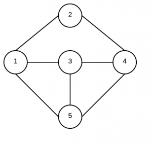

<!DOCTYPE html PUBLIC "-//W3C//DTD XHTML 1.0 Transitional//EN" "http://www.w3.org/TR/xhtml1/DTD/xhtml1-transitional.dtd">
<html xmlns="http://www.w3.org/1999/xhtml">
<head profile="http://gmpg.org/xfn/11">
<meta http-equiv="Content-Type" content="text/html; charset=utf-8"/>
<meta name="distribution" content="global"/>
<meta name="robots" content="index, follow"/>
<meta name="language" content="en, sv"/>
<title>Top 10 Algorithms for Coding Interview</title>
<meta name="distribution" content="global"/>
<meta name="robots" content="follow, all"/>
<meta name="language" content="en, sv"/>
<meta name="generator" content="WordPress 4.5.4"/>
 
<meta name="verify-v1" content="eku39xbVyAqZRVnfCQB7rGSk7S567b6gw5ZZxV6HZrc="/>
<meta name="msvalidate.01" content="C80190E357C320626147430BA5BA9A69"/>
<meta name="google-site-verification" content="qUNffY7hZLX1Gvj4EiuBShmtW33Nr8XaEtoxjeDvOpI"/>
<meta name="msvalidate.01" content="C6D2CC4CE9EDF63204585F013CB34CC9"/>
 
<link rel="shortcut icon" href="../../../wp-content/themes/light/images/icon.ico"/>
<link rel="alternate" type="application/rss+xml" title="RSS 2.0" href="../../../feed/index.html"/>
<link rel="alternate" type="text/xml" title="RSS .92" href="../../../feed/rss/index.html"/>
<link rel="alternate" type="application/atom+xml" title="Atom 0.3" href="../../../feed/atom/index.html"/>
<link rel="pingback" href="../../../xmlrpc.php.html"/>
 
 
<style type="text/css" media="screen"><!-- @import url( ../../../wp-content/themes/light/style.css ); --></style>
 
<meta name="description" content="PDF: Update History, Latest version (8/1/2016) The following are the common subjects in coding interviews. As understanding those concepts requires much"/>
<meta name="keywords" content="coding interview,interview algorithm"/>
<link rel="canonical" href="index.html"/>
 
<link rel="alternate" type="application/rss+xml" title="Program Creek &raquo; Top 10 Algorithms for Coding Interview Comments Feed" href="feed/index.html"/>
<script type="text/javascript">
			window._wpemojiSettings = {"baseUrl":"https:\/\/s.w.org\/images\/core\/emoji\/72x72\/","ext":".png","source":{"concatemoji":"http:\/\/www.programcreek.com\/wp-includes\/js\/wp-emoji-release.min.js?ver=4.5.4"}};
			!function(a,b,c){function d(a){var c,d,e,f=b.createElement("canvas"),g=f.getContext&&f.getContext("2d"),h=String.fromCharCode;if(!g||!g.fillText)return!1;switch(g.textBaseline="top",g.font="600 32px Arial",a){case"flag":return g.fillText(h(55356,56806,55356,56826),0,0),f.toDataURL().length>3e3;case"diversity":return g.fillText(h(55356,57221),0,0),c=g.getImageData(16,16,1,1).data,d=c[0]+","+c[1]+","+c[2]+","+c[3],g.fillText(h(55356,57221,55356,57343),0,0),c=g.getImageData(16,16,1,1).data,e=c[0]+","+c[1]+","+c[2]+","+c[3],d!==e;case"simple":return g.fillText(h(55357,56835),0,0),0!==g.getImageData(16,16,1,1).data[0];case"unicode8":return g.fillText(h(55356,57135),0,0),0!==g.getImageData(16,16,1,1).data[0]}return!1}function e(a){var c=b.createElement("script");c.src=a,c.type="text/javascript",b.getElementsByTagName("head")[0].appendChild(c)}var f,g,h,i;for(i=Array("simple","flag","unicode8","diversity"),c.supports={everything:!0,everythingExceptFlag:!0},h=0;h<i.length;h++)c.supports[i[h]]=d(i[h]),c.supports.everything=c.supports.everything&&c.supports[i[h]],"flag"!==i[h]&&(c.supports.everythingExceptFlag=c.supports.everythingExceptFlag&&c.supports[i[h]]);c.supports.everythingExceptFlag=c.supports.everythingExceptFlag&&!c.supports.flag,c.DOMReady=!1,c.readyCallback=function(){c.DOMReady=!0},c.supports.everything||(g=function(){c.readyCallback()},b.addEventListener?(b.addEventListener("DOMContentLoaded",g,!1),a.addEventListener("load",g,!1)):(a.attachEvent("onload",g),b.attachEvent("onreadystatechange",function(){"complete"===b.readyState&&c.readyCallback()})),f=c.source||{},f.concatemoji?e(f.concatemoji):f.wpemoji&&f.twemoji&&(e(f.twemoji),e(f.wpemoji)))}(window,document,window._wpemojiSettings);
		</script>
<style type="text/css">img.wp-smiley,img.emoji{display:inline!important;border:none!important;box-shadow:none!important;height:1em!important;width:1em!important;margin:0 .07em!important;vertical-align:-0.1em!important;background:none!important;padding:0!important;}</style>
<link rel='stylesheet' id='yarppWidgetCss-css' href='../../../wp-content/plugins/yet-another-related-posts-plugin/style/widget-ver=4.5.4.css' type='text/css' media='all'/>
<link rel='stylesheet' id='wp-syntax-css-css' href='../../../wp-content/plugins/wp-syntax/css/wp-syntax-ver=1.0.css' type='text/css' media='all'/>
<link rel='https://api.w.org/' href='../../../wp-json/index.html'/>
<link rel="EditURI" type="application/rsd+xml" title="RSD" href="../../../xmlrpc-rsd.php.html"/>
<link rel="wlwmanifest" type="application/wlwmanifest+xml" href="../../../wp-includes/wlwmanifest.xml"/>
<link rel='prev' title='100 High-Quality Java Developers&#8217; Blogs' href='../top-100-java-developers-blogs/index.html'/>
<link rel='next' title='Quicksort Array in Java' href='../quicksort-array-in-java/index.html'/>
<meta name="generator" content="WordPress 4.5.4"/>
<link rel='shortlink' href='../../../index-p=10378.html'/>
<link rel="alternate" type="application/json+oembed" href="../../../wp-json/oembed/1.0/embed/index-url=http___www.programcreek.com_2012_11_top-10-algorithms-for-coding-interview_.html"/>
<link rel="alternate" type="text/xml+oembed" href="../../../wp-json/oembed/1.0/embed/index-url=http___www.programcreek.com_2012_11_top-10-algorithms-for-coding-interview_&format=xml.html"/>
<script async src="http://pagead2.googlesyndication.com/pagead/js/adsbygoogle.js"></script>
<script>
  (adsbygoogle = window.adsbygoogle || []).push({
    google_ad_client: "ca-pub-5732630628268628",
    enable_page_level_ads: true
  });
</script>
</head>
<body id="home">
<script type="text/javascript">

  var _gaq = _gaq || [];
  _gaq.push(['_setAccount', 'UA-7639629-4']);
  _gaq.push(['_trackPageview']);

  (function() {
    var ga = document.createElement('script'); ga.type = 'text/javascript'; ga.async = true;
    ga.src = ('https:' == document.location.protocol ? 'https://' : 'http://') + 'stats.g.doubleclick.net/dc.js';
    var s = document.getElementsByTagName('script')[0]; s.parentNode.insertBefore(ga, s);
  })();

</script>
<div id="fb-root"></div>
<script>(function(d, s, id) {
  var js, fjs = d.getElementsByTagName(s)[0];
  if (d.getElementById(id)) return;
  js = d.createElement(s); js.id = id;
  js.src = "//connect.facebook.net/en_US/all.js#xfbml=1";
  fjs.parentNode.insertBefore(js, fjs);
}(document, 'script', 'facebook-jssdk'));</script>
<div id="menu">
<div class="wrappermiddlewide">
<div class="menu-prim-container"><ul id="menu-prim" class="menu"><li id="menu-item-7915" class="menu-item menu-item-type-custom menu-item-object-custom menu-item-home menu-item-has-children menu-item-7915"><a href="../../../index.html">Program Creek</a>
<ul class="sub-menu">
<li id="menu-item-13384" class="menu-item menu-item-type-post_type menu-item-object-page menu-item-13384"><a href="../../../r-tutorial-for-beginners/index.html">R</a></li>
<li id="menu-item-13386" class="menu-item menu-item-type-post_type menu-item-object-page menu-item-13386"><a href="../../../software-engineering-research/index.html">Research</a></li>
<li id="menu-item-13385" class="menu-item menu-item-type-post_type menu-item-object-page menu-item-13385"><a href="../../../machine-learning-for-java-developers/index.html">Machine Learning</a></li>
<li id="menu-item-10226" class="menu-item menu-item-type-post_type menu-item-object-page menu-item-10226"><a href="../../../about/index.html">Contact</a></li>
</ul>
</li>
<li id="menu-item-11059" class="menu-item menu-item-type-post_type menu-item-object-page menu-item-11059"><a href="../../../simple-java/index.html">Simple Java</a></li>
<li id="menu-item-13092" class="menu-item menu-item-type-post_type menu-item-object-page menu-item-13092"><a href="../../../simple-java-8-lambdas/index.html">Java 8</a></li>
<li id="menu-item-11524" class="menu-item menu-item-type-custom menu-item-object-custom current-menu-item menu-item-11524"><a href="index.html">Coding Interview</a></li>
<li id="menu-item-7559" class="menu-item menu-item-type-custom menu-item-object-custom menu-item-has-children menu-item-7559"><a href="../../../java-tutorials/index.html">Java</a>
<ul class="sub-menu">
<li id="menu-item-6939" class="menu-item menu-item-type-post_type menu-item-object-page menu-item-6939"><a href="../../../java-tutorials/java-basics/index.html">Java Basics</a></li>
<li id="menu-item-6551" class="menu-item menu-item-type-post_type menu-item-object-page menu-item-6551"><a href="../../../java-object-oriented-programming/index.html">Java Object Oriented Concepts</a></li>
<li id="menu-item-6559" class="menu-item menu-item-type-post_type menu-item-object-page menu-item-6559"><a href="../../../java-collections/index.html">Java Collections &#038; Generics</a></li>
<li id="menu-item-6542" class="menu-item menu-item-type-post_type menu-item-object-page menu-item-6542"><a href="../../../java-io/index.html">Java File I/O</a></li>
<li id="menu-item-6571" class="menu-item menu-item-type-post_type menu-item-object-page menu-item-6571"><a href="../../../java-database/index.html">Java Database</a></li>
<li id="menu-item-6565" class="menu-item menu-item-type-post_type menu-item-object-page menu-item-6565"><a href="../../../java-threads/index.html">Java Multi-Threading</a></li>
<li id="menu-item-6957" class="menu-item menu-item-type-post_type menu-item-object-page menu-item-6957"><a href="../../../java-xml-parsing/index.html">Java XML Parsing</a></li>
<li id="menu-item-7512" class="menu-item menu-item-type-post_type menu-item-object-page menu-item-7512"><a href="../../../advanced-topics/index.html">Advanced Topics</a></li>
</ul>
</li>
<li id="menu-item-6219" class="menu-item menu-item-type-post_type menu-item-object-page menu-item-6219"><a href="../../../java-design-patterns-in-stories/index.html">DP Stories</a></li>
<li id="menu-item-7237" class="menu-item menu-item-type-custom menu-item-object-custom menu-item-7237"><a href="../../../java-api-examples/index.php.html">Java Examples</a></li>
<li id="menu-item-7872" class="menu-item menu-item-type-post_type menu-item-object-page menu-item-has-children menu-item-7872"><a href="../../../popular-java-web-frameworks/index.html">Frameworks</a>
<ul class="sub-menu">
<li id="menu-item-6019" class="menu-item menu-item-type-custom menu-item-object-custom menu-item-6019"><a href="../../../2010/05/the-best-free-struts-2-tutorial/index.html">Struts 2</a></li>
<li id="menu-item-6457" class="menu-item menu-item-type-post_type menu-item-object-page menu-item-6457"><a href="../../../gwt/index.html">GWT</a></li>
<li id="menu-item-6047" class="menu-item menu-item-type-post_type menu-item-object-page menu-item-has-children menu-item-6047"><a href="../../../best-eclipse-rcp-tutorials/index.html">Eclipse</a>
<ul class="sub-menu">
<li id="menu-item-13454" class="menu-item menu-item-type-post_type menu-item-object-page menu-item-13454"><a href="../../../eclipse-architecture-design/index.html">Eclipse Architecture</a></li>
<li id="menu-item-13453" class="menu-item menu-item-type-post_type menu-item-object-page menu-item-13453"><a href="../../../develop-plug-ins-using-rcp/index.html">RCP</a></li>
<li id="menu-item-13455" class="menu-item menu-item-type-custom menu-item-object-custom menu-item-13455"><a href="../../../2011/01/best-java-development-tooling-jdt-and-astparser-tutorials/index.html">JDT</a></li>
</ul>
</li>
<li id="menu-item-7984" class="menu-item menu-item-type-post_type menu-item-object-page menu-item-7984"><a href="../../../spring/index.html">Spring</a></li>
</ul>
</li>
<li id="menu-item-14897" class="menu-item menu-item-type-custom menu-item-object-custom menu-item-14897"><a href="../../../python/index.html">Python Examples</a></li>
</ul></div> </div>
<div class="clear"> </div>
</div>
 
<div id="wrap">
<div class="wrappermiddle">
 
<div id="content">
<div class="entry-single">
 
<h1 class="entrytitle" id="post-10378"> <a href="index.html" rel="bookmark">
Top 10 Algorithms for Coding Interview </a>
</h1>
<div class="entrymeta">
&nbsp;
 
</strong>
</div>
 
<div class="entrybody">
<p>PDF: <a href="../../../2014/05/leetcode-pdf-update-history-java/index.html">Update History</a>, <a href="../../../wp-content/uploads/2012/11/coding-interview-6.pdf">Latest version (8/1/2016)</a></p>
<p>The following are the common subjects in coding interviews. As understanding those concepts requires much more effort, this tutorial only serves as an introduction. The subjects that are covered include: <em>1) String/Array/Matrix, 2) Linked List, 3) Tree, 4) Heap, 5) Graph, 6) Sorting, 7) Dynamic Programming, 8) Bit Manipulation, 9) Combinations and Permutations, and 10) Math Problems.</em> I highly recommend you to read <a href="../../../simple-java/index.html" target="_blank">"Simple Java"</a> first, if you need a brief review of Java basics. If you want to see code examples that show how to use a popular API, you can use <a href="http://www.javased.com/">JavaSED.com</a>. </p>
<p><strong>1. String/Array</strong></p>
<p>An algorithm problem's input is often a string or array. Without auto-completion of any IDE, the following methods should be remembered.</p>
<div class="wp_syntax"><table><tr><td class="code"><pre class="java" style="font-family:monospace;">toCharArray<span style="color: #009900;">&#40;</span><span style="color: #009900;">&#41;</span> <span style="color: #666666; font-style: italic;">//get char array of a String</span>
charAt<span style="color: #009900;">&#40;</span><span style="color: #000066; font-weight: bold;">int</span> x<span style="color: #009900;">&#41;</span> <span style="color: #666666; font-style: italic;">//get a char at the specific index</span>
length<span style="color: #009900;">&#40;</span><span style="color: #009900;">&#41;</span> <span style="color: #666666; font-style: italic;">//string length</span>
length <span style="color: #666666; font-style: italic;">//array size </span>
substring<span style="color: #009900;">&#40;</span><span style="color: #000066; font-weight: bold;">int</span> beginIndex<span style="color: #009900;">&#41;</span> 
substring<span style="color: #009900;">&#40;</span><span style="color: #000066; font-weight: bold;">int</span> beginIndex, <span style="color: #000066; font-weight: bold;">int</span> endIndex<span style="color: #009900;">&#41;</span>
<span style="color: #003399;">Integer</span>.<span style="color: #006633;">valueOf</span><span style="color: #009900;">&#40;</span><span style="color: #009900;">&#41;</span><span style="color: #666666; font-style: italic;">//string to integer</span>
<span style="color: #003399;">String</span>.<span style="color: #006633;">valueOf</span><span style="color: #009900;">&#40;</span><span style="color: #009900;">&#41;</span><span style="color: #339933;">/</span>integer to string
<span style="color: #003399;">Arrays</span>.<span style="color: #006633;">sort</span><span style="color: #009900;">&#40;</span><span style="color: #009900;">&#41;</span>  <span style="color: #666666; font-style: italic;">//sort an array</span>
<span style="color: #003399;">Arrays</span>.<span style="color: #006633;">toString</span><span style="color: #009900;">&#40;</span><span style="color: #000066; font-weight: bold;">char</span><span style="color: #009900;">&#91;</span><span style="color: #009900;">&#93;</span> a<span style="color: #009900;">&#41;</span> <span style="color: #666666; font-style: italic;">//convert to string</span>
<span style="color: #003399;">Arrays</span>.<span style="color: #006633;">copyOf</span><span style="color: #009900;">&#40;</span>T<span style="color: #009900;">&#91;</span><span style="color: #009900;">&#93;</span> original, <span style="color: #000066; font-weight: bold;">int</span> newLength<span style="color: #009900;">&#41;</span>
<span style="color: #003399;">System</span>.<span style="color: #006633;">arraycopy</span><span style="color: #009900;">&#40;</span><span style="color: #003399;">Object</span> src, <span style="color: #000066; font-weight: bold;">int</span> srcPos, <span style="color: #003399;">Object</span> dest, <span style="color: #000066; font-weight: bold;">int</span> destPos, <span style="color: #000066; font-weight: bold;">int</span> length<span style="color: #009900;">&#41;</span></pre></td></tr></table></div>
<p>Classic problems:<br/>
--Two Pointers--<br/>
<a href="../../../2015/03/rotate-array-in-java/index.html" title="Rotate Array in Java" target="_blank">1) Rotate Array</a>, <a href="../../../2014/05/leetcode-reverse-words-in-a-string-ii-java/index.html">Reverse Words in a String</a><br/>
<a href="../../12/leetcode-evaluate-reverse-polish-notation/index.html">2) Evaluate Reverse Polish Notation (Stack)</a><br/>
<a href="../../../2014/05/leetcode-isomorphic-strings-java/index.html" title="LeetCode – Isomorphic Strings (Java)" target="_blank">3) Isomorphic Strings</a><br/>
<a href="../../12/leetcode-word-ladder/index.html">4) Word Ladder (BFS)</a>, <a href="../../../2014/06/leetcode-word-ladder-ii-java/index.html" title="LeetCode – Word Ladder II (Java)">Word Ladder II (BFS)</a><br/>
<a href="../../12/leetcode-median-of-two-sorted-arrays-java/index.html">5) Median of Two Sorted Arrays</a><br/>
<a href="../../../2014/05/leetcode-kth-largest-element-in-an-array-java/index.html" title="LeetCode – Kth Largest Element in an Array (Java)">5) Kth Largest Element in an Array</a><br/>
<a href="../../../2014/06/leetcode-wildcard-matching-java/index.html">6) Wildcard Matching</a>, <a href="../../12/leetcode-regular-expression-matching-in-java/index.html">Regular Expression Matching</a><br/>
<a href="../../12/leetcode-merge-intervals/index.html">7) Merge Intervals</a>, <a href="../../12/leetcode-insert-interval/index.html"> Insert Interval</a><br/>
<a href="../../12/leetcode-solution-of-two-sum-in-java/index.html">9) Two Sum</a>, <a href="../../../2014/03/two-sum-ii-input-array-is-sorted-java/index.html"> Two Sum II</a>, <a href="../../../2014/03/two-sum-iii-data-structure-design-java/index.html">Two Sum III</a>, <a href="../../12/leetcode-3sum/index.html">3Sum</a>, <a href="../../../2013/02/leetcode-4sum-java/index.html">4Sum</a><br/>
<a href="../../../2013/02/leetcode-3sum-closest-java/index.html">10) 3Sum Closest</a><br/>
<a href="../../12/leetcode-string-to-integer-atoi/index.html">11) String to Integer</a><br/>
<a href="../../12/leetcode-merge-sorted-array-java/index.html">12) Merge Sorted Array</a><br/>
<a href="../../12/leetcode-valid-parentheses-java/index.html">13) Valid Parentheses</a><br/>
<a href="../../../2014/06/leetcode-longest-valid-parentheses-java/index.html" title="LeetCode – Longest Valid Parentheses (Java)">13) Longest Valid Parentheses</a><br/>
<a href="../../12/leetcode-implement-strstr-java/index.html">14) Implement strStr()</a><br/>
<a href="../../../2014/05/leetcode-minimum-size-subarray-sum-java/index.html" title="LeetCode – Minimum Size Subarray Sum (Java)" target="_blank">15) Minimum Size Subarray Sum</a><br/>
<a href="../../../2013/01/leetcode-search-insert-position/index.html">16) Search Insert Position</a><br/>
<a href="../../../2013/01/leetcode-longest-consecutive-sequence-java/index.html">17) Longest Consecutive Sequence</a><br/>
<a href="../../../2013/01/leetcode-valid-palindrome-java/index.html">18) Valid Palindrome</a><br/>
<a href="../../../2014/05/leetcode-zigzag-conversion-java/index.html" title="LeetCode – ZigZag Conversion (Java)">19) ZigZag Conversion</a><br/>
<a href="../../../2014/05/leetcode-add-binary-java/index.html" title="LeetCode – Add Binary (Java)" target="_blank">20) Add Binary </a><br/>
<a href="../../../2014/05/leetcode-length-of-last-word-java/index.html" title="LeetCode – Length of Last Word (Java)" target="_blank">21) Length of Last Word</a><br/>
<a href="../../../2013/01/leetcode-triangle-java/index.html">22) Triangle</a><br/>
24) Contains Duplicate: <a href="../../../2014/05/leetcode-contains-duplicate-java/index.html">I</a>, <a href="../../../2014/05/leetcode-contains-duplicate-ii-java/index.html">II</a>, <a href="../../../2014/06/leetcode-contains-duplicate-iii-java/index.html">III</a><br/>
25) Remove Duplicates from Sorted Array: <a href="../../../2013/01/leetcode-remove-duplicates-from-sorted-array-java/index.html">I</a>, <a href="../../../2013/01/leetcode-remove-duplicates-from-sorted-array-ii-java/index.html">II</a>, <a href="../../../2014/04/leetcode-remove-element-java/index.html">Remove Element </a>, <a href="../../../2014/05/leetcode-move-zeroes-java/index.html">Move Zeroes</a><br/>
<a href="../../../2013/02/leetcode-longest-substring-without-repeating-characters-java/index.html">27) Longest Substring Without Repeating Characters</a><br/>
<a href="../../../2013/02/longest-substring-which-contains-2-unique-characters/index.html">28) Longest Substring that contains 2 unique characters </a> [Google]<br/>
<a href="../../../2014/06/leetcode-substring-with-concatenation-of-all-words-java/index.html" title="LeetCode – Substring with Concatenation of All Words (Java)">28) Substring with Concatenation of All Words</a><br/>
<a href="../../../2014/05/leetcode-minimum-window-substring-java/index.html" title="LeetCode – Minimum Window Substring (Java)">29) Minimum Window Substring</a><br/>
31) Find Minimum in Rotated Sorted Array: <a href="../../../2014/02/leetcode-find-minimum-in-rotated-sorted-array/index.html"> I</a>, <a href="../../../2014/03/leetcode-find-minimum-in-rotated-sorted-array-ii-java/index.html">II</a><br/>
32) Search in Rotated Array:<a href="../../../2014/06/leetcode-search-in-rotated-sorted-array-java/index.html">I</a>, <a href="../../../2014/06/leetcode-search-in-rotated-sorted-array-ii-java/index.html">II</a><br/>
<a href="../../../2014/02/leetcode-min-stack-java/index.html" title="LeetCode – Min Stack (Java)">33) Min Stack</a><br/>
34) Majority Element: <a href="../../../2014/02/leetcode-majority-element-java/index.html" title="LeetCode – Majority Element (Java)">I</a>, <a href="../../../2014/07/leetcode-majority-element-ii-java/index.html">II</a><br/>
<a href="../../../2014/05/leetcode-bulls-and-cows-java/index.html">35) Bulls and Cows </a><br/>
<a href="../../../2014/05/leetcode-largest-rectangle-in-histogram-java/index.html" title="LeetCode – Largest Rectangle in Histogram (Java)">36) Largest Rectangle in Histogram</a><br/>
<a href="../../../2014/02/leetcode-longest-common-prefix-java/index.html">37) Longest Common Prefix </a> [Google]<br/>
<a href="../../../2014/02/leetcode-largest-number-java/index.html">38) Largest Number</a><br/>
<a href="../../../2014/04/leetcode-simplify-path-java/index.html" title="LeetCode – Simplify Path (Java)" target="_blank">39) Simplify Path</a><br/>
<a href="../../../2014/03/leetcode-compare-version-numbers-java/index.html" title="LeetCode – Compare Version Numbers (Java)" target="_blank">40) Compare Version Numbers</a><br/>
<a href="../../../2014/03/leetcode-gas-station-java/index.html" title="LeetCode – Gas Station (Java)" target="_blank">41) Gas Station</a><br/>
44) Pascal's Triangle: <a href="../../../2014/03/leetcode-pascals-triangle-java/index.html">I</a>, <a href="../../../2014/04/leetcode-pascals-triangle-ii-java/index.html">II</a><br/>
<a href="../../../2014/03/leetcode-container-with-most-water-java/index.html" title="LeetCode – Container With Most Water (Java)" target="_blank">45) Container With Most Water</a><br/>
<a href="../../../2014/03/leetcode-candy-java/index.html" title="LeetCode – Candy (Java)" target="_blank">45) Candy </a> [Google]<br/>
<a href="../../../2014/06/leetcode-trapping-rain-water-java/index.html" title="LeetCode – Trapping Rain Water (Java)">45) Trapping Rain Water</a><br/>
<a href="../../../2014/03/leetcode-count-and-say-java/index.html" title="LeetCode – Count and Say (Java)" target="_blank">46) Count and Say</a><br/>
<a href="../../../2014/04/leetcode-search-for-a-range-java/index.html" title="LeetCode – Search for a Range (Java)" target="_blank">47) Search for a Range</a><br/>
<a href="../../../2014/06/leetcode-basic-calculator-java/index.html">48) Basic Calculator</a>, <a href="../../../2014/05/leetcode-basic-calculator-ii-java/index.html">Basic Calculator II</a><br/>
<a href="../../../2014/04/leetcode-anagrams-java/index.html" title="LeetCode – Anagrams (Java)" target="_blank">49) Group Anagrams</a><br/>
<a href="../../../2014/06/leetcode-shortest-palindrome-java/index.html" title="LeetCode – Shortest Palindrome (Java)">50) Shortest Palindrome</a><br/>
<a href="../../../2014/06/leetcode-rectangle-area-java/index.html" title="LeetCode – Rectangle Area (Java)">51) Rectangle Area</a><br/>
<a href="../../../2014/07/leetcode-summary-ranges-java/index.html" title="LeetCode – Summary Ranges (Java)">52) Summary Ranges</a><br/>
<a href="../../../2015/02/leetcode-increasing-triplet-subsequence-java/index.html" title="LeetCode – Increasing Triplet Subsequence (Java)">53) Increasing Triplet Subsequence</a><br/>
<a href="../../../2016/04/get-target-using-number-list-and-arithmetic-operations-google/index.html">54) Get Target Using Number List And Arithmetic Operations </a><br/>
<a href="../../../2015/04/leetcode-reverse-vowels-of-a-string-java/index.html">55) Reverse Vowels of a String </a><br/>
<a href="../../../2014/04/leetcode-flip-game-java/index.html">56) Flip Game</a>, <a href="../../../2014/05/leetcode-flip-game-ii-java/index.html">Flip Game II</a><br/>
<a href="../../../2014/05/leetcode-missing-number-java/index.html">57) Missing Number</a>, <a href="../../../2015/06/leetcode-find-the-duplicate-number-java/index.html">Find the duplicate number</a>, <a href="../../../2014/05/leetcode-first-missing-positive-java/index.html" title="LeetCode – First Missing Positive (Java)">First Missing Positive </a><br/>
<a href="../../../2014/05/leetcode-valid-anagram-java/index.html">58) Valid Anagram</a>, <a href="../../../2014/05/leetcode-group-shifted-strings-java/index.html">Group Shifted Strings</a><br/>
<a href="../../../2014/05/leetcode-top-k-frequent-elements-java/index.html">59) Top K Frequent Elements</a><br/>
<a href="../../../2014/02/leetcode-find-peak-element/index.html">60) Find Peak Element</a><br/>
<a href="../../../2014/05/leetcode-word-pattern-java/index.html">61) Word Pattern</a>, <a href="../../../2014/07/leetcode-word-pattern-ii-java/index.html">Word Pattern II</a><br/>
<a href="../../../2014/05/leetcode-h-index-java/index.html">62) H-Index </a>, <a href="../../../2014/05/leetcode-h-index-ii-java/index.html">H-Index II</a><br/>
<a href="../../../2014/05/leetcode-palindrome-pairs-java/index.html">63) Palindrome Pairs</a><br/>
<a href="../../../2014/05/leetcode-one-edit-distance-java/index.html">64) One Edit Distance</a><br/>
<a href="../../../2014/05/leetcode-scramble-string-java/index.html">65) Scramble String</a><br/>
<a href="../../../2014/05/leetcode-first-bad-version-java/index.html">66) First Bad Version</a><br/>
<a href="../../../2014/05/leetcode-integer-to-english-words-java/index.html">67) Integer to English Words</a><br/>
<a href="../../../2014/05/leetcode-text-justification-java/index.html">68) Text Justification </a><br/>
<a href="../../../2014/05/leetcode-remove-invalid-parentheses-java/index.html">69) Remove Invalid Parentheses</a><br/>
<a href="../../../2015/05/leetcode-intersection-of-two-arrays-java/index.html">70) Intersection of Two Arrays</a>, <a href="../../../2014/05/leetcode-intersection-of-two-arrays-ii-java/index.html">Intersection of Two Arrays II</a><br/>
<a href="../../../2014/05/leetcode-sliding-window-maximum-java/index.html">71) Sliding Window Maximum</a>, <a href="../../../2014/05/leetcode-moving-average-from-data-stream-java/index.html">Moving Average from Data Stream</a><br/>
<a href="../../../2014/07/leetcode-guess-number-higher-or-lower-java/index.html">72) Guess Number Higher or Lower</a></p>
<p><strong>2. Matrix</strong></p>
<p>Common methods to solve matrix related problem include DFS, BFS, dynamic programming, etc. </p>
<p>Classic Problems:<br/>
<a href="../../12/leetcode-set-matrix-zeroes-java/index.html">1) Set Matrix Zeroes</a><br/>
<a href="../../../2013/01/leetcode-spiral-matrix-java/index.html">2) Spiral Matrix</a><br/>
<a href="../../../2014/05/leetcode-spiral-matrix-ii-java/index.html" title="LeetCode – Spiral Matrix II (Java)">2) Spiral Matrix II</a><br/>
<a href="../../../2013/01/leetcode-search-a-2d-matrix-java/index.html">3) Search a 2D Matrix</a><br/>
<a href="../../../2014/04/leetcode-search-a-2d-matrix-ii-java/index.html">3) Search a 2D Matrix II</a><br/>
<a href="../../../2013/01/leetcode-rotate-image-java/index.html">4) Rotate Image</a> [Palantir]<br/>
<a href="../../../2014/05/leetcode-valid-sudoku-java/index.html" title="LeetCode – Valid Sudoku (Java)">5) Valid Sudoku </a><br/>
<a href="../../../2014/05/leetcode-minimum-path-sum-java/index.html" title="LeetCode – Minimum Path Sum (Java)">6) Minimum Path Sum (DP)</a> [Google]<br/>
<a href="../../../2014/05/leetcode-unique-paths-java/index.html" title="LeetCode – Unique Paths (Java)">7) Unique Paths (DP)</a> [Google]<br/>
<a href="../../../2014/05/leetcode-unique-paths-ii-java/index.html" title="LeetCode – Unique Paths II (Java)">7) Unique Paths II (DP)</a><br/>
<a href="../../../2014/04/leetcode-number-of-islands-java/index.html" title="LeetCode – Number of Islands (Java)" target="_blank">8) Number of Islands (DFS/BFS)</a>, <a href="../../../2015/01/leetcode-number-of-islands-ii-java/index.html">Number of Islands II</a> (Disjoint Set), <a href="../../../2014/05/leetcode-number-of-connected-components-in-an-undirected-graph-java/index.html">Number of Connected Components in an Undirected Graph</a><br/>
<a href="../../../2014/04/leetcode-surrounded-regions-java/index.html" title="LeetCode – Surrounded Regions (Java)">9) Surrounded Regions (BFS)</a><br/>
<a href="../../../2014/05/leetcode-maximal-rectangle-java/index.html" title="LeetCode – Maximal Rectangle (Java)">10) Maximal Rectangle</a><br/>
<a href="../../../2014/06/leetcode-maximal-square-java/index.html" title="LeetCode – Maximal Square (Java)">10) Maximal Square</a><br/>
<a href="../../../2014/06/leetcode-word-search-java/index.html" title="LeetCode – Word Search (Java)">11) Word Search (DFS)</a><br/>
<a href="../../../2014/06/leetcode-word-search-ii-java/index.html" title="LeetCode – Word Search II (Java)">11) Word Search II</a><br/>
<a href="../../../2014/04/leetcode-range-sum-query-2d-immutable-java/index.html">13) Range Sum Query 2D – Immutable</a><br/>
<a href="../../../2014/05/leetcode-longest-increasing-path-in-a-matrix-java/index.html">14) Longest Increasing Path in a Matrix (DFS)</a><br/>
<a href="../../../2014/05/leetcode-shortest-distance-from-all-buildings-java/index.html">15) Shortest Distance from All Buildings</a><br/>
<a href="../../../2014/05/leetcode-game-of-life-java/index.html">16) Game of Life</a><br/>
<a href="../../../2014/05/leetcode-paint-house-java/index.html">17) Paint House</a>, <a href="../../../2014/05/leetcode-paint-house-ii-java/index.html">Paint House II</a><br/>
<a href="../../../2014/05/leetcode-sudoku-solver-java/index.html">18) Sudoku Solver (DFS)</a><br/>
<a href="../../../2014/05/leetcode-walls-and-gates-java/index.html">19) Walls and Gates (DFS/BFS)</a><br/>
<a href="../../../2014/05/leetcode-tic-tac-toe-java/index.html">20) Tic-Tac-Toe</a><br/>
<a href="../../../2014/07/leetcode-best-meeting-point-java/index.html">21) Best Meeting Point</a></p>
<p><strong>3. Linked List</strong></p>
<p>The implementation of a linked list is pretty simple in Java. Each node has a value and a link to next node.</p>
<div class="wp_syntax"><table><tr><td class="code"><pre class="java" style="font-family:monospace;"><span style="color: #000000; font-weight: bold;">class</span> Node <span style="color: #009900;">&#123;</span>
	<span style="color: #000066; font-weight: bold;">int</span> val<span style="color: #339933;">;</span>
	Node next<span style="color: #339933;">;</span>
&nbsp;
	Node<span style="color: #009900;">&#40;</span><span style="color: #000066; font-weight: bold;">int</span> x<span style="color: #009900;">&#41;</span> <span style="color: #009900;">&#123;</span>
		val <span style="color: #339933;">=</span> x<span style="color: #339933;">;</span>
		next <span style="color: #339933;">=</span> <span style="color: #000066; font-weight: bold;">null</span><span style="color: #339933;">;</span>
	<span style="color: #009900;">&#125;</span>
<span style="color: #009900;">&#125;</span></pre></td></tr></table></div>
<p>Two popular applications of linked list are stack and queue. </p>
<p>Stack</p>
<div class="wp_syntax"><table><tr><td class="code"><pre class="java" style="font-family:monospace;"><span style="color: #000000; font-weight: bold;">class</span> <span style="color: #003399;">Stack</span><span style="color: #009900;">&#123;</span>
	Node top<span style="color: #339933;">;</span> 
&nbsp;
	<span style="color: #000000; font-weight: bold;">public</span> Node peek<span style="color: #009900;">&#40;</span><span style="color: #009900;">&#41;</span><span style="color: #009900;">&#123;</span>
		<span style="color: #000000; font-weight: bold;">if</span><span style="color: #009900;">&#40;</span>top <span style="color: #339933;">!=</span> <span style="color: #000066; font-weight: bold;">null</span><span style="color: #009900;">&#41;</span><span style="color: #009900;">&#123;</span>
			<span style="color: #000000; font-weight: bold;">return</span> top<span style="color: #339933;">;</span>
		<span style="color: #009900;">&#125;</span>
&nbsp;
		<span style="color: #000000; font-weight: bold;">return</span> <span style="color: #000066; font-weight: bold;">null</span><span style="color: #339933;">;</span>
	<span style="color: #009900;">&#125;</span>
&nbsp;
	<span style="color: #000000; font-weight: bold;">public</span> Node pop<span style="color: #009900;">&#40;</span><span style="color: #009900;">&#41;</span><span style="color: #009900;">&#123;</span>
		<span style="color: #000000; font-weight: bold;">if</span><span style="color: #009900;">&#40;</span>top <span style="color: #339933;">==</span> <span style="color: #000066; font-weight: bold;">null</span><span style="color: #009900;">&#41;</span><span style="color: #009900;">&#123;</span>
			<span style="color: #000000; font-weight: bold;">return</span> <span style="color: #000066; font-weight: bold;">null</span><span style="color: #339933;">;</span>
		<span style="color: #009900;">&#125;</span><span style="color: #000000; font-weight: bold;">else</span><span style="color: #009900;">&#123;</span>
			Node temp <span style="color: #339933;">=</span> <span style="color: #000000; font-weight: bold;">new</span> Node<span style="color: #009900;">&#40;</span>top.<span style="color: #006633;">val</span><span style="color: #009900;">&#41;</span><span style="color: #339933;">;</span>
			top <span style="color: #339933;">=</span> top.<span style="color: #006633;">next</span><span style="color: #339933;">;</span>
			<span style="color: #000000; font-weight: bold;">return</span> temp<span style="color: #339933;">;</span>	
		<span style="color: #009900;">&#125;</span>
	<span style="color: #009900;">&#125;</span>
&nbsp;
	<span style="color: #000000; font-weight: bold;">public</span> <span style="color: #000066; font-weight: bold;">void</span> push<span style="color: #009900;">&#40;</span>Node n<span style="color: #009900;">&#41;</span><span style="color: #009900;">&#123;</span>
		<span style="color: #000000; font-weight: bold;">if</span><span style="color: #009900;">&#40;</span>n <span style="color: #339933;">!=</span> <span style="color: #000066; font-weight: bold;">null</span><span style="color: #009900;">&#41;</span><span style="color: #009900;">&#123;</span>
			n.<span style="color: #006633;">next</span> <span style="color: #339933;">=</span> top<span style="color: #339933;">;</span>
			top <span style="color: #339933;">=</span> n<span style="color: #339933;">;</span>
		<span style="color: #009900;">&#125;</span>
	<span style="color: #009900;">&#125;</span>
<span style="color: #009900;">&#125;</span></pre></td></tr></table></div>
<p>Queue</p>
<div class="wp_syntax"><table><tr><td class="code"><pre class="java" style="font-family:monospace;"><span style="color: #000000; font-weight: bold;">class</span> Queue<span style="color: #009900;">&#123;</span>
	Node first, last<span style="color: #339933;">;</span>
&nbsp;
	<span style="color: #000000; font-weight: bold;">public</span> <span style="color: #000066; font-weight: bold;">void</span> enqueue<span style="color: #009900;">&#40;</span>Node n<span style="color: #009900;">&#41;</span><span style="color: #009900;">&#123;</span>
		<span style="color: #000000; font-weight: bold;">if</span><span style="color: #009900;">&#40;</span>first <span style="color: #339933;">==</span> <span style="color: #000066; font-weight: bold;">null</span><span style="color: #009900;">&#41;</span><span style="color: #009900;">&#123;</span>
			first <span style="color: #339933;">=</span> n<span style="color: #339933;">;</span>
			last <span style="color: #339933;">=</span> first<span style="color: #339933;">;</span>
		<span style="color: #009900;">&#125;</span><span style="color: #000000; font-weight: bold;">else</span><span style="color: #009900;">&#123;</span>
			last.<span style="color: #006633;">next</span> <span style="color: #339933;">=</span> n<span style="color: #339933;">;</span>
			last <span style="color: #339933;">=</span> n<span style="color: #339933;">;</span>
		<span style="color: #009900;">&#125;</span>
	<span style="color: #009900;">&#125;</span>
&nbsp;
	<span style="color: #000000; font-weight: bold;">public</span> Node dequeue<span style="color: #009900;">&#40;</span><span style="color: #009900;">&#41;</span><span style="color: #009900;">&#123;</span>
		<span style="color: #000000; font-weight: bold;">if</span><span style="color: #009900;">&#40;</span>first <span style="color: #339933;">==</span> <span style="color: #000066; font-weight: bold;">null</span><span style="color: #009900;">&#41;</span><span style="color: #009900;">&#123;</span>
			<span style="color: #000000; font-weight: bold;">return</span> <span style="color: #000066; font-weight: bold;">null</span><span style="color: #339933;">;</span>
		<span style="color: #009900;">&#125;</span><span style="color: #000000; font-weight: bold;">else</span><span style="color: #009900;">&#123;</span>
			Node temp <span style="color: #339933;">=</span> <span style="color: #000000; font-weight: bold;">new</span> Node<span style="color: #009900;">&#40;</span>first.<span style="color: #006633;">val</span><span style="color: #009900;">&#41;</span><span style="color: #339933;">;</span>
			first <span style="color: #339933;">=</span> first.<span style="color: #006633;">next</span><span style="color: #339933;">;</span>
			<span style="color: #000000; font-weight: bold;">return</span> temp<span style="color: #339933;">;</span>
		<span style="color: #009900;">&#125;</span>	
	<span style="color: #009900;">&#125;</span>
<span style="color: #009900;">&#125;</span></pre></td></tr></table></div>
<p>The Java standard library contains a class called "<a href="http://docs.oracle.com/javase/7/docs/api/java/util/Stack.html">Stack</a>". Another class from Java SDK is <a href="http://docs.oracle.com/javase/7/docs/api/java/util/LinkedList.html">LinkedList</a>, which can be used as a Queue (add() and remove()). (LinkedList implements the Queue interface.) If a stack or queue is required to solve problems during your interview, they are ready to be used.</p>
<p>Classic Problems:<br/>
<a href="../../../2015/03/implement-a-stack-using-an-array/index.html" target="_blank">0) Implement a Stack Using an Array</a><br/>
<a href="../../12/add-two-numbers/index.html">1) Add Two Numbers</a><br/>
<a href="../../../2013/12/in-place-reorder-a-singly-linked-list-in-java/index.html">2) Reorder List</a><br/>
<a href="../../12/leetcode-linked-list-cycle/index.html">3) Linked List Cycle</a><br/>
<a href="../../12/leetcode-copy-list-with-random-pointer/index.html">4) Copy List with Random Pointer</a><br/>
<a href="../../12/leetcode-merge-two-sorted-lists-java/index.html">5) Merge Two Sorted Lists</a><br/>
<a href="../../../2015/03/leetcode-odd-even-linked-list-java/index.html">6) Odd Even Linked List</a><br/>
<a href="../../../2013/01/leetcode-remove-duplicates-from-sorted-list/index.html">7) Remove Duplicates from Sorted List</a><br/>
<a href="../../../2014/06/leetcode-remove-duplicates-from-sorted-list-ii-java/index.html" title="LeetCode – Remove Duplicates from Sorted List II (Java)">7) Remove Duplicates from Sorted List II</a><br/>
<a href="../../../2013/02/leetcode-partition-list-java/index.html">8) Partition List</a><br/>
<a href="../../../2013/03/leetcode-lru-cache-java/index.html">9) LRU Cache</a><br/>
<a href="../../../2014/02/leetcode-intersection-of-two-linked-lists-java/index.html" title="LeetCode – Intersection of Two Linked Lists (Java)">10) Intersection of Two Linked Lists</a><br/>
<a href="../../../2014/04/leetcode-remove-linked-list-elements-java/index.html" title="LeetCode – Remove Linked List Elements (Java)" target="_blank">11) Remove Linked List Elements</a><br/>
<a href="../../../2014/04/leetcode-swap-nodes-in-pairs-java/index.html" title="LeetCode – Swap Nodes in Pairs (Java)" target="_blank">12) Swap Nodes in Pairs</a><br/>
<a href="../../../2014/05/leetcode-reverse-linked-list-java/index.html" title="LeetCode – Reverse Linked List (Java)" target="_blank">13) Reverse Linked List</a>, <a href="../../../2014/06/leetcode-reverse-linked-list-ii-java/index.html" title="LeetCode – Reverse Linked List II (Java)">Reverse Linked List II</a>, Print Linked List in Reversed Order<br/>
<a href="../../../2014/05/leetcode-remove-nth-node-from-end-of-list-java/index.html" title="LeetCode – Remove Nth Node From End of List (Java)" target="_blank">14) Remove Nth Node From End of List (Fast-Slow Pointers)</a><br/>
<a href="../../../2014/06/leetcode-implement-stack-using-queues-java/index.html" title="LeetCode – Implement Stack using Queues (Java)">15) Implement Stack using Queues</a><br/>
<a href="../../../2014/07/leetcode-implement-queue-using-stacks-java/index.html" title="LeetCode – Implement Queue using Stacks (Java)">15) Implement Queue using Stacks</a><br/>
<a href="../../../2014/07/leetcode-palindrome-linked-list-java/index.html" title="LeetCode – Palindrome Linked List (Java)">16) Palindrome Linked List</a><br/>
<a href="../../../2014/07/implement-a-queue-using-an-array-in-java/index.html" title="Implement a Queue using an Array in Java">17) Implement a Queue using an Array</a><br/>
<a href="../../../2014/07/leetcode-delete-node-in-a-linked-list-java/index.html" title="LeetCode – Delete Node in a Linked List (Java)">18) Delete Node in a Linked List</a><br/>
<a href="../../../2014/05/leetcode-reverse-nodes-in-k-group-java/index.html">19) Reverse Nodes in k-Group</a></p>
<p><strong>4. Tree, Heap and Trie</strong></p>
<p>A tree normally refers to a binary tree. Each node contains a left node and right node like the following:</p>
<div class="wp_syntax"><table><tr><td class="code"><pre class="java" style="font-family:monospace;"><span style="color: #000000; font-weight: bold;">class</span> <span style="color: #003399;">TreeNode</span><span style="color: #009900;">&#123;</span>
	<span style="color: #000066; font-weight: bold;">int</span> value<span style="color: #339933;">;</span>
	<span style="color: #003399;">TreeNode</span> left<span style="color: #339933;">;</span>
	<span style="color: #003399;">TreeNode</span> right<span style="color: #339933;">;</span>
<span style="color: #009900;">&#125;</span></pre></td></tr></table></div>
<p>Here are some concepts related with trees:</p>
<ol>
<li><em>Binary Search Tree</em>: for all nodes, left children <= current node <= right children</li>
<li><em>Balanced vs. Unbalanced</em>: In a balanced tree, the depth of the left and right subtrees of every node differ by 1 or less.</li>
<li><em>Full Binary Tree</em>: every node other than the leaves has two children.</li>
<li><em>Perfect Binary Tree</em>: a full binary tree in which all leaves are at the same depth or same level, and in which every parent has two children. </li>
<li><em>Complete Binary Tree</em>: a binary tree in which every level, except possibly the last, is completely filled, and all nodes are as far left as possible</li>
</ol>
<p><a href="http://en.wikipedia.org/wiki/Heap_(data_structure)" target="_blank">Heap</a> is a specialized tree-based data structure that satisfies the heap property. The time complexity of its operations are important (e.g., find-min, delete-min, insert, etc). In Java, <a href="../../../2009/02/using-the-priorityqueue-class-example/index.html">PriorityQueue</a> is important to know. </p>
<p><strong>4.1 Tree</strong></p>
<p>1) Binary Tree Traversal: <a href="../../12/leetcode-solution-for-binary-tree-preorder-traversal-in-java/index.html">Preorder</a>, <a href="../../12/leetcode-solution-of-binary-tree-inorder-traversal-in-java/index.html">Inorder</a>, <a href="../../12/leetcode-solution-of-iterative-binary-tree-postorder-traversal-in-java/index.html">Postorder</a>, <a href="../../../2014/04/leetcode-binary-tree-level-order-traversal-java/index.html">Level Order</a>, <a href="../../../2014/04/leetcode-binary-tree-level-order-traversal-ii-java/index.html" > Level Order II</a>, <a href="../../../2014/04/leetcode-binary-tree-vertical-order-traversal-java/index.html">Vertical Order</a><br />
<a href="../../../2014/06/leetcode-invert-binary-tree-java/index.html" title="LeetCode – Invert Binary Tree (Java)">2) Invert Binary Tree</a><br />
<a href="../../../2014/07/leetcode-kth-smallest-element-in-a-bst-java/index.html" title="LeetCode – Kth Smallest Element in a BST (Java)">3) Kth Smallest Element in a BST</a><br />
<a href="../../../2014/04/leetcode-binary-tree-longest-consecutive-sequence-java/index.html">4) Binary Tree Longest Consecutive Sequence</a><br />
<a href="../../12/leetcode-validate-binary-search-tree-java/index.html">5) Validate Binary Search Tree</a><br />
<a href="../../../2013/01/leetcode-flatten-binary-tree-to-linked-list/index.html">6) Flatten Binary Tree to Linked List</a><br />
<a href="../../../2013/01/leetcode-path-sum/index.html">7) Path Sum (DFS or BFS)</a><br />
<a href="../../../2014/05/leetcode-path-sum-ii-java/index.html" title="LeetCode – Path Sum II (Java)" target="_blank">7) Path Sum II (DFS) </a><br />
<a href="../../../2013/01/construct-binary-tree-from-inorder-and-postorder-traversal/index.html">8) Construct Binary Tree from Inorder and Postorder Traversal</a><br />
<a href="../../../2014/06/leetcode-construct-binary-tree-from-preorder-and-inorder-traversal-java/index.html" title="LeetCode – Construct Binary Tree from Preorder and Inorder Traversal (Java)">8) Construct Binary Tree from Preorder and Inorder Traversal</a><br />
<a href="../../../2013/01/leetcode-convert-sorted-array-to-binary-search-tree-java/index.html">9) Convert Sorted Array to Binary Search Tree</a> [Google]<br />
<a href="../../../2013/01/leetcode-convert-sorted-list-to-binary-search-tree-java/index.html">10) Convert Sorted List to Binary Search Tree</a> [Google]<br />
<a href="../../../2013/02/leetcode-minimum-depth-of-binary-tree-java/index.html">11) Minimum Depth of Binary Tree</a><br />
<a href="../../../2013/02/leetcode-binary-tree-maximum-path-sum-java/index.html">12) Binary Tree Maximum Path Sum *</a><br />
<a href="../../../2013/02/leetcode-balanced-binary-tree-java/index.html">13) Balanced Binary Tree</a><br />
<a href="../../../2014/03/leetcode-symmetric-tree-java/index.html" title="LeetCode – Symmetric Tree (Java)" target="_blank">14) Symmetric Tree</a><br />
<a href="../../../2014/04/leetcode-binary-search-tree-iterator-java/index.html" title="LeetCode – Binary Search Tree Iterator (Java)" target="_blank">15) Binary Search Tree Iterator </a><br />
<a href="../../../2014/04/leetcode-binary-tree-right-side-view-java/index.html" title="LeetCode – Binary Tree Right Side View (Java)" target="_blank">16) Binary Tree Right Side View</a><br />
<a href="../../../2014/07/leetcode-lowest-common-ancestor-of-a-binary-search-tree-java/index.html" title="LeetCode – Lowest Common Ancestor of a Binary Search Tree (Java)">17) Lowest Common Ancestor of a Binary Search Tree</a><br />
<a href="../../../2014/07/leetcode-lowest-common-ancestor-of-a-binary-tree-java/index.html" title="LeetCode – Lowest Common Ancestor of a Binary Tree (Java)">18) Lowest Common Ancestor of a Binary Tree</a><br />
<a href="../../../2015/01/leetcode-verify-preorder-serialization-of-a-binary-tree-java/index.html">19) Verify Preorder Serialization of a Binary Tree</a><br />
<a href="../../../2014/05/leetcode-populating-next-right-pointers-in-each-node-java/index.html" title="LeetCode – Populating Next Right Pointers in Each Node (Java)" target="_blank">20) Populating Next Right Pointers in Each Node </a><br />
<a href="../../../2014/06/leetcode-populating-next-right-pointers-in-each-node-ii-java/index.html" title="LeetCode – Populating Next Right Pointers in Each Node II  (Java)">21) Populating Next Right Pointers in Each Node II </a><br />
<a href="../../../2014/05/leetcode-unique-binary-search-trees-java/index.html" title="LeetCode – Unique Binary Search Trees (Java)">21) Unique Binary Search Trees (DP)</a><br />
<a href="../../../2014/05/leetcode-unique-binary-search-trees-ii-java/index.html" title="LeetCode – Unique Binary Search Trees II (Java)">21) Unique Binary Search Trees II (DFS)</a><br />
<a href="../../../2014/05/leetcode-sum-root-to-leaf-numbers-java/index.html" title="LeetCode – Sum Root to Leaf Numbers (Java)">22) Sum Root to Leaf Numbers (DFS)</a><br />
<a href="../../../2014/06/leetcode-count-complete-tree-nodes-java/index.html" title="LeetCode – Count Complete Tree Nodes (Java)">23) Count Complete Tree Nodes </a><br />
<a href="../../../2014/05/leetcode-closest-binary-search-tree-value-java/index.html">24)  Closest Binary Search Tree Value</a><br />
<a href="../../../2014/05/leetcode-binary-tree-paths-java/index.html">25) Binary Tree Paths</a><br />
<a href="../../../2014/05/leetcode-maximum-depth-of-binary-tree-java/index.html">26)  Maximum Depth of Binary Tree</a><br />
<a href="../../../2014/05/leetcode-recover-binary-search-tree-java/index.html">27 Recover Binary Search Tree</a><br />
<a href="../../12/check-if-two-trees-are-same-or-not/index.html">28) Same Tree</a><br />
<a href="../../../2014/05/leetcode-serialize-and-deserialize-binary-tree-java/index.html">29) Serialize and Deserialize Binary Tree</a><br />
<a href="../../../2014/05/leetcode-inorder-successor-in-bst-java/index.html">30) Inorder Successor in BST</a><br />
<a href="../../../2014/07/leetcode-find-leaves-of-binary-tree-java/index.html">31) Find Leaves of Binary Tree</a><br />
<a href="../../../2014/07/leetcode-largest-bst-subtree-java/index.html">32) Largest BST Subtree</a></p>
<p><strong>4.2 Heap</strong></p>
<p><a href="../../../2014/05/merge-k-sorted-arrays-in-java/index.html" title="Merge K Sorted Arrays in Java">1) Merge k sorted arrays</a> [Google]<br />
<a href="../../../2013/02/leetcode-merge-k-sorted-lists-java/index.html">2) Merge k Sorted Lists *</a><br />
<a href="../../../2015/01/leetcode-find-median-from-data-stream-java/index.html">3) Find Median from Data Stream</a><br />
<a href="../../../2014/05/leetcode-meeting-rooms-ii-java/index.html">4) Meeting Rooms II</a>, <a href="../../../2014/07/leetcode-meeting-rooms-java/index.html">Meeting Rooms</a><br />
<a href="../../../2014/07/leetcode-range-addition-java/index.html">5) Range Addition</a></p>
<p><strong>4.3 Trie</strong></p>
<p><a href="../../../2014/05/leetcode-implement-trie-prefix-tree-java/index.html" title="LeetCode – Implement Trie (Prefix Tree) (Java)" target="_blank">1) Implement Trie (Prefix Tree)</a><br />
<a href="../../../2014/05/leetcode-add-and-search-word-data-structure-design-java/index.html" title="LeetCode – Add and Search Word – Data structure design (Java)">2) Add and Search Word - Data structure design (DFS)</a> </p>
<p><strong>4.4 Segment Tree</strong></p>
<p><a href="../../../2014/04/leetcode-range-sum-query-mutable-java/index.html">1) Range Sum Query - Mutable</a><br />
<a href="../../../2014/06/leetcode-the-skyline-problem-java/index.html">2) The Skyline Problem </a></p>
<p><strong>5. Graph</strong></p>
<p>Graph related questions mainly focus on depth first search and breath first search. Depth first search is straightforward, you can just loop through neighbors starting from the root node. </p>
<p>Below is a simple implementation of a graph and breath first search. The key is using a queue to store nodes.</p>
<p></p>
<p>1) Define a GraphNode</p>

<div class="wp_syntax"><table><tr><td class="code"><pre class="java" style="font-family:monospace;"><span style="color: #000000; font-weight: bold;">class</span> GraphNode<span style="color: #009900;">&#123;</span> 
	<span style="color: #000066; font-weight: bold;">int</span> val<span style="color: #339933;">;</span>
	GraphNode next<span style="color: #339933;">;</span>
	GraphNode<span style="color: #009900;">&#91;</span><span style="color: #009900;">&#93;</span> neighbors<span style="color: #339933;">;</span>
	<span style="color: #000066; font-weight: bold;">boolean</span> visited<span style="color: #339933;">;</span>
&nbsp;
	GraphNode<span style="color: #009900;">&#40;</span><span style="color: #000066; font-weight: bold;">int</span> x<span style="color: #009900;">&#41;</span> <span style="color: #009900;">&#123;</span>
		val <span style="color: #339933;">=</span> x<span style="color: #339933;">;</span>
	<span style="color: #009900;">&#125;</span>
&nbsp;
	GraphNode<span style="color: #009900;">&#40;</span><span style="color: #000066; font-weight: bold;">int</span> x, GraphNode<span style="color: #009900;">&#91;</span><span style="color: #009900;">&#93;</span> n<span style="color: #009900;">&#41;</span><span style="color: #009900;">&#123;</span>
		val <span style="color: #339933;">=</span> x<span style="color: #339933;">;</span>
		neighbors <span style="color: #339933;">=</span> n<span style="color: #339933;">;</span>
	<span style="color: #009900;">&#125;</span>
&nbsp;
	<span style="color: #000000; font-weight: bold;">public</span> <span style="color: #003399;">String</span> toString<span style="color: #009900;">&#40;</span><span style="color: #009900;">&#41;</span><span style="color: #009900;">&#123;</span>
		<span style="color: #000000; font-weight: bold;">return</span> <span style="color: #0000ff;">&quot;value: &quot;</span><span style="color: #339933;">+</span> <span style="color: #000000; font-weight: bold;">this</span>.<span style="color: #006633;">val</span><span style="color: #339933;">;</span> 
	<span style="color: #009900;">&#125;</span>
<span style="color: #009900;">&#125;</span></pre></td></tr></table></div>

<p>2) Define a Queue</p>

<div class="wp_syntax"><table><tr><td class="code"><pre class="java" style="font-family:monospace;"><span style="color: #000000; font-weight: bold;">class</span> Queue<span style="color: #009900;">&#123;</span>
	GraphNode first, last<span style="color: #339933;">;</span>
&nbsp;
	<span style="color: #000000; font-weight: bold;">public</span> <span style="color: #000066; font-weight: bold;">void</span> enqueue<span style="color: #009900;">&#40;</span>GraphNode n<span style="color: #009900;">&#41;</span><span style="color: #009900;">&#123;</span>
		<span style="color: #000000; font-weight: bold;">if</span><span style="color: #009900;">&#40;</span>first <span style="color: #339933;">==</span> <span style="color: #000066; font-weight: bold;">null</span><span style="color: #009900;">&#41;</span><span style="color: #009900;">&#123;</span>
			first <span style="color: #339933;">=</span> n<span style="color: #339933;">;</span>
			last <span style="color: #339933;">=</span> first<span style="color: #339933;">;</span>
		<span style="color: #009900;">&#125;</span><span style="color: #000000; font-weight: bold;">else</span><span style="color: #009900;">&#123;</span>
			last.<span style="color: #006633;">next</span> <span style="color: #339933;">=</span> n<span style="color: #339933;">;</span>
			last <span style="color: #339933;">=</span> n<span style="color: #339933;">;</span>
		<span style="color: #009900;">&#125;</span>
	<span style="color: #009900;">&#125;</span>
&nbsp;
	<span style="color: #000000; font-weight: bold;">public</span> GraphNode dequeue<span style="color: #009900;">&#40;</span><span style="color: #009900;">&#41;</span><span style="color: #009900;">&#123;</span>
		<span style="color: #000000; font-weight: bold;">if</span><span style="color: #009900;">&#40;</span>first <span style="color: #339933;">==</span> <span style="color: #000066; font-weight: bold;">null</span><span style="color: #009900;">&#41;</span><span style="color: #009900;">&#123;</span>
			<span style="color: #000000; font-weight: bold;">return</span> <span style="color: #000066; font-weight: bold;">null</span><span style="color: #339933;">;</span>
		<span style="color: #009900;">&#125;</span><span style="color: #000000; font-weight: bold;">else</span><span style="color: #009900;">&#123;</span>
			GraphNode temp <span style="color: #339933;">=</span> <span style="color: #000000; font-weight: bold;">new</span> GraphNode<span style="color: #009900;">&#40;</span>first.<span style="color: #006633;">val</span>, first.<span style="color: #006633;">neighbors</span><span style="color: #009900;">&#41;</span><span style="color: #339933;">;</span>
			first <span style="color: #339933;">=</span> first.<span style="color: #006633;">next</span><span style="color: #339933;">;</span>
			<span style="color: #000000; font-weight: bold;">return</span> temp<span style="color: #339933;">;</span>
		<span style="color: #009900;">&#125;</span>	
	<span style="color: #009900;">&#125;</span>
<span style="color: #009900;">&#125;</span></pre></td></tr></table></div>

<p>3) Breath First Search uses a Queue</p>

<div class="wp_syntax"><table><tr><td class="code"><pre class="java" style="font-family:monospace;"><span style="color: #000000; font-weight: bold;">public</span> <span style="color: #000000; font-weight: bold;">class</span> GraphTest <span style="color: #009900;">&#123;</span>
&nbsp;
	<span style="color: #000000; font-weight: bold;">public</span> <span style="color: #000000; font-weight: bold;">static</span> <span style="color: #000066; font-weight: bold;">void</span> main<span style="color: #009900;">&#40;</span><span style="color: #003399;">String</span><span style="color: #009900;">&#91;</span><span style="color: #009900;">&#93;</span> args<span style="color: #009900;">&#41;</span> <span style="color: #009900;">&#123;</span>
		GraphNode n1 <span style="color: #339933;">=</span> <span style="color: #000000; font-weight: bold;">new</span> GraphNode<span style="color: #009900;">&#40;</span><span style="color: #cc66cc;">1</span><span style="color: #009900;">&#41;</span><span style="color: #339933;">;</span> 
		GraphNode n2 <span style="color: #339933;">=</span> <span style="color: #000000; font-weight: bold;">new</span> GraphNode<span style="color: #009900;">&#40;</span><span style="color: #cc66cc;">2</span><span style="color: #009900;">&#41;</span><span style="color: #339933;">;</span> 
		GraphNode n3 <span style="color: #339933;">=</span> <span style="color: #000000; font-weight: bold;">new</span> GraphNode<span style="color: #009900;">&#40;</span><span style="color: #cc66cc;">3</span><span style="color: #009900;">&#41;</span><span style="color: #339933;">;</span> 
		GraphNode n4 <span style="color: #339933;">=</span> <span style="color: #000000; font-weight: bold;">new</span> GraphNode<span style="color: #009900;">&#40;</span><span style="color: #cc66cc;">4</span><span style="color: #009900;">&#41;</span><span style="color: #339933;">;</span> 
		GraphNode n5 <span style="color: #339933;">=</span> <span style="color: #000000; font-weight: bold;">new</span> GraphNode<span style="color: #009900;">&#40;</span><span style="color: #cc66cc;">5</span><span style="color: #009900;">&#41;</span><span style="color: #339933;">;</span> 
&nbsp;
		n1.<span style="color: #006633;">neighbors</span> <span style="color: #339933;">=</span> <span style="color: #000000; font-weight: bold;">new</span> GraphNode<span style="color: #009900;">&#91;</span><span style="color: #009900;">&#93;</span><span style="color: #009900;">&#123;</span>n2,n3,n5<span style="color: #009900;">&#125;</span><span style="color: #339933;">;</span>
		n2.<span style="color: #006633;">neighbors</span> <span style="color: #339933;">=</span> <span style="color: #000000; font-weight: bold;">new</span> GraphNode<span style="color: #009900;">&#91;</span><span style="color: #009900;">&#93;</span><span style="color: #009900;">&#123;</span>n1,n4<span style="color: #009900;">&#125;</span><span style="color: #339933;">;</span>
		n3.<span style="color: #006633;">neighbors</span> <span style="color: #339933;">=</span> <span style="color: #000000; font-weight: bold;">new</span> GraphNode<span style="color: #009900;">&#91;</span><span style="color: #009900;">&#93;</span><span style="color: #009900;">&#123;</span>n1,n4,n5<span style="color: #009900;">&#125;</span><span style="color: #339933;">;</span>
		n4.<span style="color: #006633;">neighbors</span> <span style="color: #339933;">=</span> <span style="color: #000000; font-weight: bold;">new</span> GraphNode<span style="color: #009900;">&#91;</span><span style="color: #009900;">&#93;</span><span style="color: #009900;">&#123;</span>n2,n3,n5<span style="color: #009900;">&#125;</span><span style="color: #339933;">;</span>
		n5.<span style="color: #006633;">neighbors</span> <span style="color: #339933;">=</span> <span style="color: #000000; font-weight: bold;">new</span> GraphNode<span style="color: #009900;">&#91;</span><span style="color: #009900;">&#93;</span><span style="color: #009900;">&#123;</span>n1,n3,n4<span style="color: #009900;">&#125;</span><span style="color: #339933;">;</span>
&nbsp;
		breathFirstSearch<span style="color: #009900;">&#40;</span>n1, <span style="color: #cc66cc;">5</span><span style="color: #009900;">&#41;</span><span style="color: #339933;">;</span>
	<span style="color: #009900;">&#125;</span>
&nbsp;
	<span style="color: #000000; font-weight: bold;">public</span> <span style="color: #000000; font-weight: bold;">static</span> <span style="color: #000066; font-weight: bold;">void</span> breathFirstSearch<span style="color: #009900;">&#40;</span>GraphNode root, <span style="color: #000066; font-weight: bold;">int</span> x<span style="color: #009900;">&#41;</span><span style="color: #009900;">&#123;</span>
		<span style="color: #000000; font-weight: bold;">if</span><span style="color: #009900;">&#40;</span>root.<span style="color: #006633;">val</span> <span style="color: #339933;">==</span> x<span style="color: #009900;">&#41;</span>
			<span style="color: #003399;">System</span>.<span style="color: #006633;">out</span>.<span style="color: #006633;">println</span><span style="color: #009900;">&#40;</span><span style="color: #0000ff;">&quot;find in root&quot;</span><span style="color: #009900;">&#41;</span><span style="color: #339933;">;</span>
&nbsp;
		Queue queue <span style="color: #339933;">=</span> <span style="color: #000000; font-weight: bold;">new</span> Queue<span style="color: #009900;">&#40;</span><span style="color: #009900;">&#41;</span><span style="color: #339933;">;</span>
		root.<span style="color: #006633;">visited</span> <span style="color: #339933;">=</span> <span style="color: #000066; font-weight: bold;">true</span><span style="color: #339933;">;</span>
		queue.<span style="color: #006633;">enqueue</span><span style="color: #009900;">&#40;</span>root<span style="color: #009900;">&#41;</span><span style="color: #339933;">;</span>
&nbsp;
		<span style="color: #000000; font-weight: bold;">while</span><span style="color: #009900;">&#40;</span>queue.<span style="color: #006633;">first</span> <span style="color: #339933;">!=</span> <span style="color: #000066; font-weight: bold;">null</span><span style="color: #009900;">&#41;</span><span style="color: #009900;">&#123;</span>
			GraphNode c <span style="color: #339933;">=</span> <span style="color: #009900;">&#40;</span>GraphNode<span style="color: #009900;">&#41;</span> queue.<span style="color: #006633;">dequeue</span><span style="color: #009900;">&#40;</span><span style="color: #009900;">&#41;</span><span style="color: #339933;">;</span>
			<span style="color: #000000; font-weight: bold;">for</span><span style="color: #009900;">&#40;</span>GraphNode n<span style="color: #339933;">:</span> c.<span style="color: #006633;">neighbors</span><span style="color: #009900;">&#41;</span><span style="color: #009900;">&#123;</span>
&nbsp;
				<span style="color: #000000; font-weight: bold;">if</span><span style="color: #009900;">&#40;</span><span style="color: #339933;">!</span>n.<span style="color: #006633;">visited</span><span style="color: #009900;">&#41;</span><span style="color: #009900;">&#123;</span>
					<span style="color: #003399;">System</span>.<span style="color: #006633;">out</span>.<span style="color: #006633;">print</span><span style="color: #009900;">&#40;</span>n <span style="color: #339933;">+</span> <span style="color: #0000ff;">&quot; &quot;</span><span style="color: #009900;">&#41;</span><span style="color: #339933;">;</span>
					n.<span style="color: #006633;">visited</span> <span style="color: #339933;">=</span> <span style="color: #000066; font-weight: bold;">true</span><span style="color: #339933;">;</span>
					<span style="color: #000000; font-weight: bold;">if</span><span style="color: #009900;">&#40;</span>n.<span style="color: #006633;">val</span> <span style="color: #339933;">==</span> x<span style="color: #009900;">&#41;</span>
						<span style="color: #003399;">System</span>.<span style="color: #006633;">out</span>.<span style="color: #006633;">println</span><span style="color: #009900;">&#40;</span><span style="color: #0000ff;">&quot;Find &quot;</span><span style="color: #339933;">+</span>n<span style="color: #009900;">&#41;</span><span style="color: #339933;">;</span>
					queue.<span style="color: #006633;">enqueue</span><span style="color: #009900;">&#40;</span>n<span style="color: #009900;">&#41;</span><span style="color: #339933;">;</span>
				<span style="color: #009900;">&#125;</span>
			<span style="color: #009900;">&#125;</span>
		<span style="color: #009900;">&#125;</span>
	<span style="color: #009900;">&#125;</span>
<span style="color: #009900;">&#125;</span></pre></td></tr></table></div>

<p>Output: </p>
<div class="somecode">
value: 2 value: 3 value: 5 Find value: 5<br />
value: 4
</div>
<p>Classic Problems:<br />
<a href="../../12/leetcode-clone-graph-java/index.html">1) Clone Graph</a><br />
<a href="../../../2014/05/leetcode-course-schedule-java/index.html" title="LeetCode – Course Schedule (Java)" target="_blank">2) Course Schedule </a>, <a href="../../../2014/06/leetcode-course-schedule-ii-java/index.html" title="LeetCode – Course Schedule II (Java)">Course Schedule II </a>, <a href="../../../2014/07/leetcode-minimum-height-trees-java/index.html">Minimum Height Trees</a><br />
<a href="../../../2015/03/leetcode-reconstruct-itinerary-java/index.html">3) Reconstruct Itinerary</a><br />
<a href="../../../2014/05/graph-valid-tree-java/index.html">4) Graph Valid Tree</a></p>
<p><strong>6. Sorting</strong></p>
<p>Time complexity of different sorting algorithms. You can go to wiki to see basic idea of them. </p>
<table width=60% border=1>
<tbody>
<tr>
<td > Algorithm</td>
<td > Average Time</td>
<td > Worst Time</td>
<td >Space</td>
</tr>
<tr>
<td > Bubble sort</td>
<td > n^2</td>
<td > n^2</td>
<td >1</td>
</tr>
<tr>
<td >Selection sort</td>
<td >n^2</td>
<td >n^2</td>
<td >1</td>
</tr>
<tr>
<td >Insertion sort</td>
<td >n^2</td>
<td >n^2</td>
<td ></td>
</tr>
<tr>
<td >Quick sort</td>
<td >n log(n)</td>
<td >n^2</td>
<td ></td>
</tr>
<tr>
<td >Merge sort</td>
<td >n log(n)</td>
<td >n log(n)</td>
<td>depends</td>
</tr>
</tbody>
</table>
<p>* BinSort, Radix Sort and CountSort use different set of assumptions than the rest, and so they are not "general" sorting methods. (Thanks to Fidel for pointing this out)</p>
<p><!--Counting Sort n+k --></p>
<p>Here are some implementations/demos, and in addition, you may want to check out how <a href="../../../2014/03/how-developers-sort-in-java/index.html">Java developers sort in practice</a>.<br />
<a href="../leetcode-solution-merge-sort-linkedlist-in-java/index.html"> 1) Mergesort</a><br />
<a href="../quicksort-array-in-java/index.html">2) Quicksort</a><br />
<a href="../leetcode-solution-sort-a-linked-list-using-insertion-sort-in-java/index.html">3) InsertionSort</a>.<br />
<a href="../../../2014/03/leetcode-maximum-gap-java/index.html" title="LeetCode – Maximum Gap (Java)">4) Maximum Gap (Bucket Sort)</a><br />
<a href="../../../2014/06/leetcode-sort-colors-java/index.html" title="LeetCode – Sort Colors (Java)">5) Sort Colors (Counting Sort)</a></p>
<p><strong>7. Dynamic Programming</strong></p>
<p>Dynamic programming is a technique for solving problems with the following properties:</p>
<ol>
<li>An instance is solved using the solutions for smaller instances.</li>
<li>The solution for a smaller instance might be needed multiple times.</li>
<li>The solutions to smaller instances are stored in a table, so that each smaller instance is solved only once.</li>
<li>Additional space is used to save time.</li>
</ol>
<p><br />
The problem of climbing steps perfectly fit those 4 properties. Therefore, it can be solve by using dynamic programming.</p>

<div class="wp_syntax"><table><tr><td class="code"><pre class="java" style="font-family:monospace;"><span style="color: #000000; font-weight: bold;">public</span> <span style="color: #000000; font-weight: bold;">static</span> <span style="color: #000066; font-weight: bold;">int</span><span style="color: #009900;">&#91;</span><span style="color: #009900;">&#93;</span> A <span style="color: #339933;">=</span> <span style="color: #000000; font-weight: bold;">new</span> <span style="color: #000066; font-weight: bold;">int</span><span style="color: #009900;">&#91;</span><span style="color: #cc66cc;">100</span><span style="color: #009900;">&#93;</span><span style="color: #339933;">;</span>
&nbsp;
<span style="color: #000000; font-weight: bold;">public</span> <span style="color: #000000; font-weight: bold;">static</span> <span style="color: #000066; font-weight: bold;">int</span> f3<span style="color: #009900;">&#40;</span><span style="color: #000066; font-weight: bold;">int</span> n<span style="color: #009900;">&#41;</span> <span style="color: #009900;">&#123;</span>
	<span style="color: #000000; font-weight: bold;">if</span> <span style="color: #009900;">&#40;</span>n <span style="color: #339933;">&lt;=</span> <span style="color: #cc66cc;">2</span><span style="color: #009900;">&#41;</span>
		A<span style="color: #009900;">&#91;</span>n<span style="color: #009900;">&#93;</span><span style="color: #339933;">=</span> n<span style="color: #339933;">;</span>
&nbsp;
	<span style="color: #000000; font-weight: bold;">if</span><span style="color: #009900;">&#40;</span>A<span style="color: #009900;">&#91;</span>n<span style="color: #009900;">&#93;</span> <span style="color: #339933;">&gt;</span> <span style="color: #cc66cc;">0</span><span style="color: #009900;">&#41;</span>
		<span style="color: #000000; font-weight: bold;">return</span> A<span style="color: #009900;">&#91;</span>n<span style="color: #009900;">&#93;</span><span style="color: #339933;">;</span>
	<span style="color: #000000; font-weight: bold;">else</span>
		A<span style="color: #009900;">&#91;</span>n<span style="color: #009900;">&#93;</span> <span style="color: #339933;">=</span> f3<span style="color: #009900;">&#40;</span>n<span style="color: #339933;">-</span><span style="color: #cc66cc;">1</span><span style="color: #009900;">&#41;</span> <span style="color: #339933;">+</span> f3<span style="color: #009900;">&#40;</span>n<span style="color: #339933;">-</span><span style="color: #cc66cc;">2</span><span style="color: #009900;">&#41;</span><span style="color: #339933;">;</span><span style="color: #666666; font-style: italic;">//store results so only calculate once!</span>
	<span style="color: #000000; font-weight: bold;">return</span> A<span style="color: #009900;">&#91;</span>n<span style="color: #009900;">&#93;</span><span style="color: #339933;">;</span>
<span style="color: #009900;">&#125;</span></pre></td></tr></table></div>

<p>Classic problems:<br />
<a href="../../../2013/12/edit-distance-in-java/index.html" title="Edit Distance in Java">1) Edit Distance</a><br />
<a href="../../../2013/01/leetcode-distinct-subsequences-total-java/index.html">1) Distinct Subsequences Total</a><br />
<a href="../../../2013/12/leetcode-solution-of-longest-palindromic-substring-java/index.html" title="Leetcode Solution of Longest Palindromic Substring in Java">2) Longest Palindromic Substring</a><br />
<a href="../../12/leetcode-solution-word-break/index.html" title="Leetcode Solution – Word Break">3) Word Break</a><br />
<a href="../../../2014/03/leetcode-word-break-ii-java/index.html" title="LeetCode – Word Break II (Java)">3) Word Break II</a><br />
<a href="../../../2013/02/leetcode-maximum-subarray-java/index.html">4) Maximum Subarray</a><br />
<a href="../../../2014/03/leetcode-maximum-product-subarray-java/index.html" title="LeetCode – Maximum Product Subarray (Java)" target="_blank">4) Maximum Product Subarray</a><br />
<a href="../../../2013/03/leetcode-palindrome-partitioning-java/index.html" title="LeetCode – Palindrome Partitioning (Java)">5)  Palindrome Partitioning</a><br />
<a href="../../../2014/04/leetcode-palindrome-partitioning-ii-java/index.html" title="LeetCode – Palindrome Partitioning II (Java)" target="_blank">5) Palindrome Partitioning II </a><br />
<a href="../../../2014/03/leetcode-house-robber-java/index.html" title="LeetCode – House Robber (Java)" target="_blank">6) House Robber </a> [Google]<br />
<a href="../../../2014/05/leetcode-house-robber-ii-java/index.html" title="LeetCode – House Robber II (Java)">6) House Robber II</a><br />
<a href="../../../2015/03/leetcode-house-robber-iii-java/index.html">6) House Robber III</a><br />
<a href="../../../2014/03/leetcode-jump-game-java/index.html" title="LeetCode – Jump Game (Java)" target="_blank">7) Jump Game</a><br />
<a href="../../../2014/06/leetcode-jump-game-ii-java/index.html" title="LeetCode – Jump Game II (Java)">7) Jump Game II</a><br />
<a href="../../../2014/02/leetcode-best-time-to-buy-and-sell-stock-java/index.html" title="LeetCode – Best Time to Buy and Sell Stock (Java)">8) Best Time to Buy and Sell Stock </a><br />
<a href="../../../2014/02/leetcode-best-time-to-buy-and-sell-stock-ii-java/index.html" title="LeetCode – Best Time to Buy and Sell Stock II  (Java)">8) Best Time to Buy and Sell Stock II</a><br />
<a href="../../../2014/02/leetcode-best-time-to-buy-and-sell-stock-iii-java/index.html" title="LeetCode – Best Time to Buy and Sell Stock III (Java)">8)  Best Time to Buy and Sell Stock III </a><br />
<a href="../../../2014/03/leetcode-best-time-to-buy-and-sell-stock-iv-java/index.html" title="LeetCode – Best Time to Buy and Sell Stock IV (Java)" target="_blank">8) Best Time to Buy and Sell Stock IV </a><br />
<a href="../../../2014/03/leetcode-dungeon-game-java/index.html" title="LeetCode – Dungeon Game (Java)" target="_blank">9) Dungeon Game  </a><br />
<a href="../../../2014/05/leetcode-minimum-path-sum-java/index.html" title="LeetCode – Minimum Path Sum (Java)">10) Minimum Path Sum</a><br />
<a href="../../../2014/05/leetcode-unique-paths-java/index.html" title="LeetCode – Unique Paths (Java)">11) Unique Paths</a><br />
<a href="../../../2014/06/leetcode-decode-ways-java/index.html" title="LeetCode – Decode Ways (Java)">12) Decode Ways</a><br />
<a href="../../../2014/04/longest-common-subsequence-java/index.html">13) Longest Common Subsequence</a><br />
<a href="../../../2015/04/longest-common-substring-java/index.html">14) Longest Common Substring</a><br />
<a href="../../../2014/04/leetcode-longest-increasing-subsequence-java/index.html">15) Longest Increasing Subsequence</a><br />
<a href="../../../2015/04/leetcode-coin-change-java/index.html">16) Coin Change</a><br />
<a href="../../../2014/05/leetcode-perfect-squares-java/index.html">17) Perfect Squares</a></p>
<p><strong>8. Bit Manipulation</strong></p>
<p>Bit operators:</p>
<table border=1 width=100%>
<tr>
<td>OR (|)</td>
<td>AND (&)</td>
<td>XOR (^)</td>
<td>Left Shift (<<)</td>
<td>Right Shift (>>)</td>
<td>Not (~)</td>
</tr>
<tr>
<td>1|0=1</td>
<td>1&0=0</td>
<td>1^0=1</td>
<td>0010<<2=1000</td>
<td>1100>>2=0011</td>
<td>~1=0</td>
</tr>
</table>
<p>Get bit i for a give number n. (i count from 0 and starts from right)</p>

<div class="wp_syntax"><table><tr><td class="code"><pre class="java" style="font-family:monospace;"><span style="color: #000000; font-weight: bold;">public</span> <span style="color: #000000; font-weight: bold;">static</span> <span style="color: #000066; font-weight: bold;">boolean</span> getBit<span style="color: #009900;">&#40;</span><span style="color: #000066; font-weight: bold;">int</span> num, <span style="color: #000066; font-weight: bold;">int</span> i<span style="color: #009900;">&#41;</span><span style="color: #009900;">&#123;</span>
	<span style="color: #000066; font-weight: bold;">int</span> result <span style="color: #339933;">=</span> num <span style="color: #339933;">&amp;</span> <span style="color: #009900;">&#40;</span><span style="color: #cc66cc;">1</span><span style="color: #339933;">&lt;&lt;</span>i<span style="color: #009900;">&#41;</span><span style="color: #339933;">;</span>
&nbsp;
	<span style="color: #000000; font-weight: bold;">if</span><span style="color: #009900;">&#40;</span>result <span style="color: #339933;">==</span> <span style="color: #cc66cc;">0</span><span style="color: #009900;">&#41;</span><span style="color: #009900;">&#123;</span>
		<span style="color: #000000; font-weight: bold;">return</span> <span style="color: #000066; font-weight: bold;">false</span><span style="color: #339933;">;</span>
	<span style="color: #009900;">&#125;</span><span style="color: #000000; font-weight: bold;">else</span><span style="color: #009900;">&#123;</span>
		<span style="color: #000000; font-weight: bold;">return</span> <span style="color: #000066; font-weight: bold;">true</span><span style="color: #339933;">;</span>
	<span style="color: #009900;">&#125;</span>
<span style="color: #009900;">&#125;</span></pre></td></tr></table></div>

<p>For example, get second bit of number 10. </p>
<div class="somecode">
i=1, n=10<br />
1<<1= 10
1010&10=10
10 is not 0, so return true;
</div>
<p>Classic Problems:<br />
<a href="../../12/leetcode-solution-of-single-number-in-java/index.html">1) Single Number</a><br />
<a href="../../../2014/03/leetcode-single-number-ii-java/index.html" title="LeetCode – Single Number II (Java)">1) Single Number II</a><br />
<a href="../../../2013/02/twitter-codility-problem-max-binary-gap/index.html">2) Maximum Binary Gap</a><br />
<a href="../../../2014/03/leetcode-number-of-1-bits-java/index.html" title="LeetCode – Number of 1 Bits (Java)" target="_blank">3) Number of 1 Bits </a><br />
<a href="../../../2014/03/leetcode-reverse-bits-java/index.html" title="LeetCode – Reverse Bits (Java)" target="_blank">4) Reverse Bits </a><br />
<a href="../../../2014/03/leetcode-repeated-dna-sequences-java/index.html" title="LeetCode – Repeated DNA Sequences (Java)" target="_blank">5) Repeated DNA Sequences</a><br />
<a href="../../../2014/04/leetcode-bitwise-and-of-numbers-range-java/index.html" title="LeetCode – Bitwise AND of Numbers Range  (Java)">6) Bitwise AND of Numbers Range </a><br />
<a href="../../../2015/07/leetcode-sum-of-two-integers-java/index.html">7) Sum of Two Integers</a><br />
<a href="../../../2015/03/leetcode-counting-bits-java/index.html">8) Counting Bits</a><br />
<a href="../../../2014/04/leetcode-maximum-product-of-word-lengths-java/index.html">9) Maximum Product of Word Lengths</a><br />
<a href="../../../2014/05/leetcode-gray-code-java/index.html">10) Gray Code</a></p>
<p><strong>9. Combinations and Permutations</strong></p>
<p>The difference between combination and permutation is whether order matters.</p>
<p>Example 1:</p>
<blockquote><p>
Given 5 numbers - 1, 2, 3, 4 and 5, print out different sequence of the 5 numbers. 4 can not be the third one, 3 and 5 can not be adjacent. How many different combinations?
</p></blockquote>
<p>Example 2: </p>
<blockquote><p>
Given 5 banaba, 4 pear, and 3 apple, assuming one kind of fruit are the same, how many different combinations?
</p></blockquote>
<p>Class Problems:<br />
<a href="../../../2013/02/leetcode-permutations-java/index.html">1) Permutations</a><br />
<a href="../../../2013/02/leetcode-permutations-ii-java/index.html">2) Permutations II </a><br />
<a href="../../../2013/02/leetcode-permutation-sequence-java/index.html">3) Permutation Sequence</a><br />
<a href="../../../2014/01/leetcode-generate-parentheses-java/index.html">4) Generate Parentheses</a><br />
<a href="../../../2014/02/leetcode-combination-sum-java/index.html" title="LeetCode – Combination Sum (Java)">5) Combination Sum (DFS)</a>, <a href="../../../2014/04/leetcode-combination-sum-ii-java/index.html" title="LeetCode – Combination Sum II (Java)" target="_blank">II (DFS)</a>, <a href="../../../2014/05/leetcode-combination-sum-iii-java/index.html" title="LeetCode – Combination Sum III (Java)">III (DFS)</a>, <a href="../../../2014/07/leetcode-combination-sum-iv-java/index.html">IV (DP)</a><br />
<a href="../../../2014/03/leetcode-combinations-java/index.html" title="LeetCode – Combinations (Java)">6) Combinations (DFS)</a><br />
<a href="../../../2014/04/leetcode-letter-combinations-of-a-phone-number-java/index.html" title="LeetCode – Letter Combinations of a Phone Number (Java)" target="_blank">7) Letter Combinations of a Phone Number (DFS)</a><br />
<a href="../../../2014/06/leetcode-restore-ip-addresses-java/index.html" title="LeetCode – Restore IP Addresses (Java)">8) Restore IP Addresses</a><br />
<a href="../../../2014/07/leetcode-factor-combinations-java/index.html">9) Factor Combinations</a> (DFS)</p>
<p><strong>10. Math </strong></p>
<p>Solving math problems usually require us to find regularities or repeated pattern from the observations. List the results for a small set of numbers first, if you do not have any ideas. </p>
<p><a href="../../12/leetcode-reverse-integer/index.html">1) Reverse Integer</a><br />
<a href="../../../2013/02/leetcode-palindrome-number-java/index.html">2) Palindrome Number</a><br />
3) <a href="../../12/leetcode-powx-n/index.html">Pow(x,n)</a>, <a href="../../../2014/07/leetcode-power-of-two-java/index.html" title="LeetCode – Power of Two (Java)">Power of Two</a>, <a href="../../../2014/04/leetcode-power-of-three-java/index.html">Power of Three</a>, <a href="../../../2015/04/leetcode-power-of-four-java/index.html">Power of Four </a><br />
<a href="../../../2013/01/leetcode-subsets-java/index.html">4) Subsets</a><br />
<a href="../../../2013/01/leetcode-subsets-ii-java/index.html">5) Subsets II</a><br />
<a href="../../../2014/03/leetcode-fraction-to-recurring-decimal-java/index.html" title="LeetCode – Fraction to Recurring Decimal (Java)" target="_blank">6) Fraction to Recurring Decimal</a> [Google]<br />
<a href="../../../2014/03/leetcode-excel-sheet-column-number-java/index.html" title="LeetCode – Excel Sheet Column Number (Java)" target="_blank">7) Excel Sheet Column Number</a><br />
<a href="../../../2014/03/leetcode-excel-sheet-column-title-java/index.html" title="LeetCode – Excel Sheet Column Title (Java)" target="_blank">8) Excel Sheet Column Title </a><br />
<a href="../../../2014/04/leetcode-factorial-trailing-zeroes-java/index.html" title="LeetCode – Factorial Trailing Zeroes (Java)" target="_blank">9) Factorial Trailing Zeroes</a><br />
<a href="../../../2014/04/leetcode-happy-number-java/index.html" title="LeetCode – Happy Number (Java)" target="_blank">10) Happy Number</a><br />
<a href="../../../2014/04/leetcode-count-primes-java/index.html" title="LeetCode – Count Primes (Java)">11) Count Primes</a><br />
<a href="../../../2014/05/leetcode-plus-one-java/index.html" title="LeetCode – Plus One (Java)">12) Plus One</a><br />
<a href="../../../2014/05/leetcode-divide-two-integers-java/index.html" title="LeetCode – Divide Two Integers (Java)">13) Divide Two Integers</a><br />
<a href="../../../2014/05/leetcode-multiply-strings-java/index.html" title="LeetCode – Multiply Strings (Java)">14) Multiply Strings</a><br />
<a href="../../../2014/04/leetcode-max-points-on-a-line-java/index.html" title="LeetCode – Max Points on a Line (Java)">15) Max Points on a Line</a><br />
<a href="../../../2014/07/leetcode-product-of-array-except-self-java/index.html" title="LeetCode – Product of Array Except Self (Java)">16) Product of Array Except Self</a><br />
<a href="../../../2015/04/leetcode-integer-break-java/index.html">17) Integer Break</a><br />
<a href="../../../2014/04/leetcode-add-digits-java/index.html">18) Add Digits</a><br />
<a href="../../../2014/05/leetcode-ugly-number-java/index.html">21) Ugly Number</a>, 9<a href="../../../2014/05/leetcode-ugly-number-ii-java/index.html">Ugly Number II</a>, <a href="../../../2014/05/leetcode-super-ugly-number-java/index.html">Super Ugly Number</a>, <a href="../../../2015/07/leetcode-find-k-pairs-with-smallest-sums-java/index.html">Find K Pairs with Smallest Sums</a></p>
<p>UPDATE:  I decided to add more categories below. </p>
<p><strong>11. HashMap </strong></p>
<p><a href="../../../2014/07/leetcode-shortest-word-distance-ii-java/index.html">1) Shortest Word Distance II</a></p>
<p>Additional Problems:<br />
<a href="../../../2015/03/leetcode-self-crossing-java/index.html">1) Self Crossing</a><br />
<a href="../../../2015/01/leetcode-patching-array-java/index.html">2) Patching Array</a><br />
<a href="../../../2014/04/leetcode-nim-game-java/index.html">3) Nim Game</a><br />
<a href="../../../2014/05/leetcode-bulb-switcher-java/index.html">4) Bulb Switcher</a><br />
<a href="../../../2014/05/leetcode-pain-fence-java/index.html">5) Pain Fence</a><br />
<a href="../../../2014/05/leetcode-nested-list-weight-sum-java/index.html">6) Nested List Weight Sum</a></p>
<p><strong>Additional Resources</strong><br />
1. <a href="../../../2013/02/how-to-share-your-eclipse-projects-to-github/index.html" target="_blank">Share your code to Github/BitBucket</a></p>
<!-- end of each post -->
<ins class="adsbygoogle"
     style="display:block"
     data-ad-client="ca-pub-5732630628268628"
     data-ad-slot="6344454412"
     data-ad-format="auto"></ins>
<script>
(adsbygoogle = window.adsbygoogle || []).push({});
</script><div class='yarpp-related'>
<h3>You may also like ...</h3><ol>
<li><a href="../../../2013/02/how-to-answer-coding-questions-for-your-interview/index.html" rel="bookmark" title="How to answer coding questions for your interview?">How to answer coding questions for your interview? </a></li>
<li><a href="../../12/%E9%9D%A2%E8%AF%9510%E5%A4%A7%E7%AE%97%E6%B3%95%E6%B1%87%E6%80%BB%EF%BC%8B%E5%B8%B8%E8%A7%81%E9%A2%98%E7%9B%AE%E8%A7%A3%E7%AD%94/index.html" rel="bookmark" title="面试10大算法汇总＋常见题目解答">面试10大算法汇总＋常见题目解答 </a></li>
<li><a href="../../../2014/06/leetcode-word-ladder-ii-java/index.html" rel="bookmark" title="LeetCode &#8211; Word Ladder II (Java)">LeetCode &#8211; Word Ladder II (Java) </a></li>
<li><a href="../../../2013/03/leetcode-lru-cache-java/index.html" rel="bookmark" title="LeetCode &#8211; LRU Cache (Java)">LeetCode &#8211; LRU Cache (Java) </a></li>
</ol>
</div>
	

<!-- agoodone -->
<ins class="adsbygoogle"
     style="display:inline-block;width:336px;height:280px"
     data-ad-client="ca-pub-5732630628268628"
     data-ad-slot="8149213617"></ins>
<script>
(adsbygoogle = window.adsbygoogle || []).push({});
</script>

<!-- 
<ins class="adsbygoogle"
     style="display:inline-block;width:728px;height:90px"
     data-ad-client="ca-pub-5732630628268628"
     data-ad-slot="2834525210"></ins>
<script>
(adsbygoogle = window.adsbygoogle || []).push({});
</script>
	 -->   
			<div class="sociable"></div>
	    </div>
	    
	    
	    <!--single-bottom-ads-->	
<!--
		<div style="width:100%; margin:0 0;">
						<script async src="//pagead2.googlesyndication.com/pagead/js/adsbygoogle.js"></script>
						<ins class="adsbygoogle"
						     style="display:inline-block;width:336px;height:280px"
						     data-ad-client="ca-pub-5732630628268628"
						     data-ad-slot="8668090404"></ins>
						<script>
						(adsbygoogle = window.adsbygoogle || []).push({});
						</script>
		</div>
	-->
    
	 
	    
	    Category >>  <a href="../../../category/java-2/algorithms/index.html" rel="category tag">Algorithms</a> >> <a href="../../../category/interview/index.html" rel="category tag">Interview</a> &nbsp; 
	<rdf:RDF xmlns:rdf="http://www.w3.org/1999/02/22-rdf-syntax-ns#"
			xmlns:dc="http://purl.org/dc/elements/1.1/"
			xmlns:trackback="http://madskills.com/public/xml/rss/module/trackback/">
		<rdf:Description rdf:about="http://www.programcreek.com/2012/11/top-10-algorithms-for-coding-interview/"
    dc:identifier="http://www.programcreek.com/2012/11/top-10-algorithms-for-coding-interview/"
    dc:title="Top 10 Algorithms for Coding Interview"
    trackback:ping="http://www.programcreek.com/2012/11/top-10-algorithms-for-coding-interview/trackback/" />
</rdf:RDF>
	

	


	
  </div>
 
 
 <!-- 
<div id="author">
<ins class="adsbygoogle"
     style="display:inline-block;width:336px;height:280px"
     data-ad-client="ca-pub-5732630628268628"
     data-ad-slot="1182236812"></ins>
<script>
(adsbygoogle = window.adsbygoogle || []).push({});
</script>
</div>

-->
  
<font color="green">If you want someone to read your code, 
please put the code inside <span style="color:red;">&lt;pre&gt;&lt;code&gt;</span>  
and 
<span style="color:red;">&lt;/code&gt;&lt;/pre&gt;</span>
 tags.  For example:</font>
<br>
<pre>
&lt;pre&gt;&lt;code&gt; 
String foo = "bar";
&lt;/code&gt;&lt;/pre&gt;
</pre>

  
<div id="disqus_thread">
            <div id="dsq-content">


            <ul id="dsq-comments">
                    <li class="comment even thread-even depth-1" id="dsq-comment-15112">
        <div id="dsq-comment-header-15112" class="dsq-comment-header">
            <cite id="dsq-cite-15112">
                <span id="dsq-author-user-15112">Juan Carlos Alvarez</span>
            </cite>
        </div>
        <div id="dsq-comment-body-15112" class="dsq-comment-body">
            <div id="dsq-comment-message-15112" class="dsq-comment-message"><p>Preach it brother!.</p>
</div>
        </div>

    </li><!-- #comment-## -->
    <li class="comment odd alt thread-odd thread-alt depth-1" id="dsq-comment-12590">
        <div id="dsq-comment-header-12590" class="dsq-comment-header">
            <cite id="dsq-cite-12590">
                <span id="dsq-author-user-12590">Cherry Zhao</span>
            </cite>
        </div>
        <div id="dsq-comment-body-12590" class="dsq-comment-body">
            <div id="dsq-comment-message-12590" class="dsq-comment-message"><p>This is a great post. I like that it includes almost all the common topics asked in coding interviews. I also like to share this blog about coding interview questions &#8211; <a href="http://blog.gainlo.co/index.php/category/coding-interview-questions/" rel="nofollow">http://blog.gainlo.co/index.php/category/coding-interview-questions/</a></p>
</div>
        </div>

    </li><!-- #comment-## -->
    <li class="comment even thread-even depth-1" id="dsq-comment-11687">
        <div id="dsq-comment-header-11687" class="dsq-comment-header">
            <cite id="dsq-cite-11687">
                <span id="dsq-author-user-11687">Walt Corey</span>
            </cite>
        </div>
        <div id="dsq-comment-body-11687" class="dsq-comment-body">
            <div id="dsq-comment-message-11687" class="dsq-comment-message"><p>Perhaps but that wasn&#8217;t the question Bob. I completely disagree with your conclusion. Too many professional developers forget they are paid to write software, generally for sale, not rewrite the language in their own image. </p>
<p>This is a derivative of,<br />
1) get it working.<br />
2) get it working correctly.<br />
3) If, and only if, there is a performance problem in that piece of code, optimize the implementation. </p>
<p>If they wanted to know how to implement a DeQueue that should/would have been the question.</p>
<p>The meta answer I gave was I do not reinvent the language unless I absolutely need to. And that was two years ago&#8230;.c&#8217;mon dude.</p>
</div>
        </div>

    </li><!-- #comment-## -->
    <li class="comment odd alt thread-odd thread-alt depth-1" id="dsq-comment-11669">
        <div id="dsq-comment-header-11669" class="dsq-comment-header">
            <cite id="dsq-cite-11669">
                <span id="dsq-author-user-11669">Róbert Papp</span>
            </cite>
        </div>
        <div id="dsq-comment-body-11669" class="dsq-comment-body">
            <div id="dsq-comment-message-11669" class="dsq-comment-message"><p>Hmm, I know it&#8217;s not the point here, but I wouldn&#8217;t accept Stack as an answer: it&#8217;s synchronised and based on Vector. This may have been the answer way back more than 10 years ago, today a better answer may be: use ArrayDeque or LinkedList instance though the Deque interface, but one should be able to whip one up from scratch on request, because it&#8217;s so simple.</p>
</div>
        </div>

    </li><!-- #comment-## -->
    <li class="comment even thread-even depth-1" id="dsq-comment-11562">
        <div id="dsq-comment-header-11562" class="dsq-comment-header">
            <cite id="dsq-cite-11562">
                <span id="dsq-author-user-11562">Anshul Goel</span>
            </cite>
        </div>
        <div id="dsq-comment-body-11562" class="dsq-comment-body">
            <div id="dsq-comment-message-11562" class="dsq-comment-message"><p>Perfect</p>
</div>
        </div>

    </li><!-- #comment-## -->
    <li class="comment odd alt thread-odd thread-alt depth-1" id="dsq-comment-11324">
        <div id="dsq-comment-header-11324" class="dsq-comment-header">
            <cite id="dsq-cite-11324">
                <a id="dsq-author-user-11324" href="http://geekyogi.com/" target="_blank" rel="nofollow">Om Shankar</a>
            </cite>
        </div>
        <div id="dsq-comment-body-11324" class="dsq-comment-body">
            <div id="dsq-comment-message-11324" class="dsq-comment-message"><p>Can you give any example of your statement? How many horrible programmers you know who ended up being in Google, Netflix, etc. &#8211; they all take puzzle, algorithms, and such interviews. By now, Google, Facebook, Netflix, LinkedIn, Apple, etc. have the best programmers. Hence they are the best companies. </p>
<p>For your solution, &#8220;I&#8217;d develop in a language which supports lists natively&#8221; &#8211; you take for granted that the language exists, and it can exec a Linked List. Whoa!! Someone intelligent has to create that first, right? for it to exist, for you to then use it!</p>
<p>Referring your comment below, industry leading companies &#8211; might not be the companies who create things. For eg., Accenture/ServiceNow, etc. are industry leading companies for the &#8220;Service Industry&#8221;. How many patents have they filed?</p>
<p>Compare them  to patents filed by Google, Facebook, LinkedIn, etc.</p>
<p>Industry leading companies usually want to &#8220;pick up the best reference and implement it&#8221; &#8211; like you said. But who creates those as references?<br />
Someone should create a masterpiece, to be chosen and used by others. </p>
<p>Companies like Google, Facebook, etc. &#8220;create&#8221; things. And that&#8217;s why they are fair in taking such interview. </p>
<p>Experience of XYZ yrs, is an important thing, very important. But &#8220;raw intelligence&#8221; is also very important. Both go hand in hand. Companies that are shaping the technology around us, want to be sure that they are hiring intelligent people. So that, when some entirely new problem has to be solved (which can&#8217;t be solved with previous experience), it can be done. </p>
</div>
        </div>

    </li><!-- #comment-## -->
    <li class="comment even thread-even depth-1" id="dsq-comment-11055">
        <div id="dsq-comment-header-11055" class="dsq-comment-header">
            <cite id="dsq-cite-11055">
                <a id="dsq-author-user-11055" href="http://www.fromdev.com/" target="_blank" rel="nofollow">Java Developer</a>
            </cite>
        </div>
        <div id="dsq-comment-body-11055" class="dsq-comment-body">
            <div id="dsq-comment-message-11055" class="dsq-comment-message"><p>Unfortunately, these questions are being asked to Fresh graduates and Seniors alike. Last few months I attended 10+ interviews. All started with a phone interview on laptop with naive editor where they expect you to even remember all syntax. Interviewers are expecting you to solve these types of questions in 30 minutes with best possible algorithm. In real world, best algorithms evolve. </p>
<p>You can clear these interviews only if you have exclusively prepared for these companies and type of questions. Once interview is cleared, all these companies are same old crap. </p>
<p>Google, Facebook, linkedin, amazon, ebay &#8211; all of them do it same way. </p>
<p>Even worse &#8211; startups are giving coding project and round zero screening than do next rounds as coding. Waste almost 1 full day in interview and reject most people wasting everyone&#8217;s time.</p>
<p>Here is a good read from Jeff Atwood &#8211; <a href="http://blog.codinghorror.com/we-hire-the-best-just-like-everyone-else/" rel="nofollow">http://blog.codinghorror.com/we-hire-the-best-just-like-everyone-else/</a></p>
</div>
        </div>

    </li><!-- #comment-## -->
    <li class="comment odd alt thread-odd thread-alt depth-1" id="dsq-comment-10800">
        <div id="dsq-comment-header-10800" class="dsq-comment-header">
            <cite id="dsq-cite-10800">
                <span id="dsq-author-user-10800">Anjali</span>
            </cite>
        </div>
        <div id="dsq-comment-body-10800" class="dsq-comment-body">
            <div id="dsq-comment-message-10800" class="dsq-comment-message"><p>Programming Problem List<br />
<a href="http://www.binarycoder.org/484-2/" rel="nofollow">http://www.binarycoder.org/484-2/</a></p>
</div>
        </div>

    </li><!-- #comment-## -->
    <li class="comment even thread-even depth-1" id="dsq-comment-10667">
        <div id="dsq-comment-header-10667" class="dsq-comment-header">
            <cite id="dsq-cite-10667">
                <span id="dsq-author-user-10667">3D</span>
            </cite>
        </div>
        <div id="dsq-comment-body-10667" class="dsq-comment-body">
            <div id="dsq-comment-message-10667" class="dsq-comment-message"><p>Thank you!</p>
</div>
        </div>

    </li><!-- #comment-## -->
    <li class="comment odd alt thread-odd thread-alt depth-1" id="dsq-comment-10649">
        <div id="dsq-comment-header-10649" class="dsq-comment-header">
            <cite id="dsq-cite-10649">
                <span id="dsq-author-user-10649">ryanlr</span>
            </cite>
        </div>
        <div id="dsq-comment-body-10649" class="dsq-comment-body">
            <div id="dsq-comment-message-10649" class="dsq-comment-message"><p>PDF updated now. Thanks!</p>
</div>
        </div>

    </li><!-- #comment-## -->
    <li class="comment even thread-even depth-1" id="dsq-comment-10535">
        <div id="dsq-comment-header-10535" class="dsq-comment-header">
            <cite id="dsq-cite-10535">
                <span id="dsq-author-user-10535">3D</span>
            </cite>
        </div>
        <div id="dsq-comment-body-10535" class="dsq-comment-body">
            <div id="dsq-comment-message-10535" class="dsq-comment-message"><p>Could you please update the PDF version to the latest 2016. 03. 19. as well?</p>
<p>Thank you!</p>
</div>
        </div>

    </li><!-- #comment-## -->
    <li class="comment odd alt thread-odd thread-alt depth-1" id="dsq-comment-10489">
        <div id="dsq-comment-header-10489" class="dsq-comment-header">
            <cite id="dsq-cite-10489">
                <span id="dsq-author-user-10489">airjordan919</span>
            </cite>
        </div>
        <div id="dsq-comment-body-10489" class="dsq-comment-body">
            <div id="dsq-comment-message-10489" class="dsq-comment-message"><p>As I see, a lot of these questions are actually not asking you to reinvent wheels but testing your ability to design efficient and simple algorithms as well as using appropriate data structures.</p>
</div>
        </div>

    </li><!-- #comment-## -->
    <li class="comment even thread-even depth-1" id="dsq-comment-10299">
        <div id="dsq-comment-header-10299" class="dsq-comment-header">
            <cite id="dsq-cite-10299">
                <span id="dsq-author-user-10299">Keith Moon</span>
            </cite>
        </div>
        <div id="dsq-comment-body-10299" class="dsq-comment-body">
            <div id="dsq-comment-message-10299" class="dsq-comment-message"><p>Irrelevance, you mean. I agree with your basic premise about the uselessness of implementing a linked list, but your arrogance is grating. If you are going to make the argument that you aren&#8217;t going to listen to the arguments made by someone who cannot spell properly, or use proper punctuation, grammar, and capitalization, it is ironic that you can&#8217;t spell either. Or maybe it was just a typo, like the &#8220;match&#8221; in question.</p>
<p>&#8220;I&#8217;ve interviewed with industry-leading companies.<br />
I&#8217;ve worked for industry-leading companies.<br />
I&#8217;ve interviewed candidates for industry-leading companies.&#8221;</p>
<p>I am not sure if you are trolling or not, but in the last 6 months I have been asked multiple questions from this list by Google, Microsoft, and Amazon. To give them credit, they didn&#8217;t care if I recalled the correct method names for STL or Collections classes and methods, but the questions were from this list. Regardless of how useful these problems are in real life (they are not that useful mostly), they are useful just for the purpose of interviews.</p>
</div>
        </div>

    </li><!-- #comment-## -->
    <li class="comment odd alt thread-odd thread-alt depth-1" id="dsq-comment-10007">
        <div id="dsq-comment-header-10007" class="dsq-comment-header">
            <cite id="dsq-cite-10007">
                <span id="dsq-author-user-10007">Malleus Veritas</span>
            </cite>
        </div>
        <div id="dsq-comment-body-10007" class="dsq-comment-body">
            <div id="dsq-comment-message-10007" class="dsq-comment-message"><p>The criticism of someone who cannot use proper grammar, punctuation, and capitalization is so stinging.  Consider me rebuked by your rapier-keen insight. </p>
<p>The unskilled often mistake competence and confidence for arrogance because they lack the skill to tell the difference.</p>
<p>Bottom line is that if you want to hire the right people, you need to ask the right questions.  Questions that test the candidate&#8217;s ability to regurgitate facts they learned by rote are not the right questions.  Questions that demonstrate the candidate&#8217;s ability to apply that knowledge are.</p>
</div>
        </div>

    </li><!-- #comment-## -->
    <li class="comment even thread-even depth-1" id="dsq-comment-9954">
        <div id="dsq-comment-header-9954" class="dsq-comment-header">
            <cite id="dsq-cite-9954">
                <span id="dsq-author-user-9954">mary joe</span>
            </cite>
        </div>
        <div id="dsq-comment-body-9954" class="dsq-comment-body">
            <div id="dsq-comment-message-9954" class="dsq-comment-message"><p>You are a very ignorant yet highly arrogant person and I cant believe there are so many idiots give u plus ones   i bet there are many losers out there who got rejected by google or facebook. I have checked your resume and the company that you worked for is nothing impressive.  Yes it is a bad practice to reinvent the wheels in real life, but does it necessarily mean it a bad pratice to ask those questions in interview?  Why are the universites all over the world teach calculus, linear algebra, differential equations? Will those subjects really be used in real life, by your logic by bother learning all of those, why dont the universtisy dump all the theoretical courses anyway.   I am pretty sure that you are not more than an average programmer, just becauser you are not good at it  and you cant work for google or mircosoft doesnt mean those questions are horriable. I just cant stand incompetent people bullshiting here and pretend to be pro.</p>
</div>
        </div>

    </li><!-- #comment-## -->
    <li class="comment odd alt thread-odd thread-alt depth-1" id="dsq-comment-9953">
        <div id="dsq-comment-header-9953" class="dsq-comment-header">
            <cite id="dsq-cite-9953">
                <span id="dsq-author-user-9953">mary joe</span>
            </cite>
        </div>
        <div id="dsq-comment-body-9953" class="dsq-comment-body">
            <div id="dsq-comment-message-9953" class="dsq-comment-message"><p>Thx OP for compiling a great list of interview questions! They are very commonly seen in those big 4 compaines.</p>
</div>
        </div>

    </li><!-- #comment-## -->
    <li class="comment even thread-even depth-1" id="dsq-comment-8978">
        <div id="dsq-comment-header-8978" class="dsq-comment-header">
            <cite id="dsq-cite-8978">
                <span id="dsq-author-user-8978">Maya</span>
            </cite>
        </div>
        <div id="dsq-comment-body-8978" class="dsq-comment-body">
            <div id="dsq-comment-message-8978" class="dsq-comment-message"><p>Thanks for your solution. There are lots of new question in leetcode now, please update.</p>
</div>
        </div>

    </li><!-- #comment-## -->
    <li class="comment odd alt thread-odd thread-alt depth-1" id="dsq-comment-8859">
        <div id="dsq-comment-header-8859" class="dsq-comment-header">
            <cite id="dsq-cite-8859">
                <span id="dsq-author-user-8859">Sergey Muravyov</span>
            </cite>
        </div>
        <div id="dsq-comment-body-8859" class="dsq-comment-body">
            <div id="dsq-comment-message-8859" class="dsq-comment-message"><p>THX a lot for this post, really useful, especially for closed issues from leet!</p>
</div>
        </div>

    </li><!-- #comment-## -->
    <li class="comment even thread-even depth-1" id="dsq-comment-8687">
        <div id="dsq-comment-header-8687" class="dsq-comment-header">
            <cite id="dsq-cite-8687">
                <span id="dsq-author-user-8687">Mike</span>
            </cite>
        </div>
        <div id="dsq-comment-body-8687" class="dsq-comment-body">
            <div id="dsq-comment-message-8687" class="dsq-comment-message"><p>Good point!</p>
</div>
        </div>

    </li><!-- #comment-## -->
    <li class="comment odd alt thread-odd thread-alt depth-1" id="dsq-comment-7672">
        <div id="dsq-comment-header-7672" class="dsq-comment-header">
            <cite id="dsq-cite-7672">
                <span id="dsq-author-user-7672">vin_it</span>
            </cite>
        </div>
        <div id="dsq-comment-body-7672" class="dsq-comment-body">
            <div id="dsq-comment-message-7672" class="dsq-comment-message"><p>What was that!! 😮</p>
</div>
        </div>

    </li><!-- #comment-## -->
    <li class="comment even thread-even depth-1" id="dsq-comment-7642">
        <div id="dsq-comment-header-7642" class="dsq-comment-header">
            <cite id="dsq-cite-7642">
                <a id="dsq-author-user-7642" href="http://javaproficiency.com" target="_blank" rel="nofollow">Shivam Singh</a>
            </cite>
        </div>
        <div id="dsq-comment-body-7642" class="dsq-comment-body">
            <div id="dsq-comment-message-7642" class="dsq-comment-message"><p>Nice algorithms&#8230;. visit more <a href="http://tinyurl.com/top50programs" rel="nofollow"> Coding interview questions </a></p>
</div>
        </div>

    </li><!-- #comment-## -->
    <li class="comment odd alt thread-odd thread-alt depth-1" id="dsq-comment-7568">
        <div id="dsq-comment-header-7568" class="dsq-comment-header">
            <cite id="dsq-cite-7568">
                <span id="dsq-author-user-7568">Nathaniel Talcott</span>
            </cite>
        </div>
        <div id="dsq-comment-body-7568" class="dsq-comment-body">
            <div id="dsq-comment-message-7568" class="dsq-comment-message"><p>&#8220;I&#8217;ve seen more than enough people coming from university trying to solve<br />
 everything with recursion &#8211; resulting in bad to read, slow and memory<br />
expensive code.&#8221;</p>
<p>Yeah, what do those University assholes know anyway?</p>
<p>&#8220;Every recursion creates a copy of the recursive function<br />
 in memory(in most languages). And recursion almost always is slower<br />
than the iterative solution.&#8221;</p>
<p>This statement is incorrect.  When you do tail recursion there is no reason to create a new stack frame.</p>
<p>When you say that &#8220;most&#8221; languages can&#8217;t do [tail recursion] you&#8217;re wrong.  C and C++ optimize for tail recursion and, in most non-contrived cases, will execute a properly implemented recursive function faster and with less memory than a comparable iterative function.</p>
<p>Java and C# do not have the optimization for tail recursion because they&#8217;re being compiled just in time (JIT)&#8230; the JIT process doesn&#8217;t allow time to perform the tail recursion optimization this feature was never implemented in these languages.</p>
<p>There is a reason it is a bad idea to use Java for real-time or embedded applications.  Not only does the JIT process prevent optimization&#8230; but in every instance where the Java creators had to choose between performance and safety (by which I mean preventing the developer from making stupid mistakes) the Java creators always erred on the side of preventing stupid mistakes.</p>
</div>
        </div>

    </li><!-- #comment-## -->
    <li class="comment even thread-even depth-1" id="dsq-comment-7553">
        <div id="dsq-comment-header-7553" class="dsq-comment-header">
            <cite id="dsq-cite-7553">
                <span id="dsq-author-user-7553">a</span>
            </cite>
        </div>
        <div id="dsq-comment-body-7553" class="dsq-comment-body">
            <div id="dsq-comment-message-7553" class="dsq-comment-message"><p>irrelevance*</p>
</div>
        </div>

    </li><!-- #comment-## -->
    <li class="comment odd alt thread-odd thread-alt depth-1" id="dsq-comment-7535">
        <div id="dsq-comment-header-7535" class="dsq-comment-header">
            <cite id="dsq-cite-7535">
                <span id="dsq-author-user-7535">Ashwin</span>
            </cite>
        </div>
        <div id="dsq-comment-body-7535" class="dsq-comment-body">
            <div id="dsq-comment-message-7535" class="dsq-comment-message"><p>Appreciate your effort getting the algorithms , its fun to ponder over the questions and try solving it, weather of or not to be asked in interview , I like to go through the subjects u have shared.</p>
</div>
        </div>

    </li><!-- #comment-## -->
    <li class="comment even thread-even depth-1" id="dsq-comment-7528">
        <div id="dsq-comment-header-7528" class="dsq-comment-header">
            <cite id="dsq-cite-7528">
                <span id="dsq-author-user-7528">Mamta Ajay Rai</span>
            </cite>
        </div>
        <div id="dsq-comment-body-7528" class="dsq-comment-body">
            <div id="dsq-comment-message-7528" class="dsq-comment-message"><p>Good Article .Good point &#8216;Joe Pepersack&#8217; agreed.</p>
</div>
        </div>

    </li><!-- #comment-## -->
    <li class="comment odd alt thread-odd thread-alt depth-1" id="dsq-comment-7446">
        <div id="dsq-comment-header-7446" class="dsq-comment-header">
            <cite id="dsq-cite-7446">
                <span id="dsq-author-user-7446">Raul Astudillo</span>
            </cite>
        </div>
        <div id="dsq-comment-body-7446" class="dsq-comment-body">
            <div id="dsq-comment-message-7446" class="dsq-comment-message"><p>I&#8217;ve recently arrived to the US and I&#8217;m having this huge struggle with interviews for the same thing. I had three interviews where recruiters liked my profile to be later rejected by indian technical reviewers because I can&#8217;t implement over the phone a hashmap.</p>
<p>I&#8217;m really tired to be treated like a google search client over the phone for things that can be easily solved by a 10 second search on google.</p>
<p>I have 6 years working as a programmer and 4 of those years working at IBM Chile so I think I can do just fine without knowing letter by letter those algorithms (and I haven&#8217;t even used any of those because frameworks already implement them).</p>
</div>
        </div>

    </li><!-- #comment-## -->
    <li class="comment even thread-even depth-1" id="dsq-comment-7425">
        <div id="dsq-comment-header-7425" class="dsq-comment-header">
            <cite id="dsq-cite-7425">
                <span id="dsq-author-user-7425">Holden</span>
            </cite>
        </div>
        <div id="dsq-comment-body-7425" class="dsq-comment-body">
            <div id="dsq-comment-message-7425" class="dsq-comment-message"><p>I am really curious what was that! 🙂</p>
</div>
        </div>

    </li><!-- #comment-## -->
    <li class="comment odd alt thread-odd thread-alt depth-1" id="dsq-comment-7421">
        <div id="dsq-comment-header-7421" class="dsq-comment-header">
            <cite id="dsq-cite-7421">
                <span id="dsq-author-user-7421">java_an</span>
            </cite>
        </div>
        <div id="dsq-comment-body-7421" class="dsq-comment-body">
            <div id="dsq-comment-message-7421" class="dsq-comment-message"><p>visit <a href="http://tinyurl.com/mystringprogram" rel="nofollow"> string program </a> for interview</p>
</div>
        </div>

    </li><!-- #comment-## -->
    <li class="comment even thread-even depth-1" id="dsq-comment-7375">
        <div id="dsq-comment-header-7375" class="dsq-comment-header">
            <cite id="dsq-cite-7375">
                <span id="dsq-author-user-7375">Pierre Wang</span>
            </cite>
        </div>
        <div id="dsq-comment-body-7375" class="dsq-comment-body">
            <div id="dsq-comment-message-7375" class="dsq-comment-message"><p>when l = Integer.MAX_VALUE, then  l + 1 =0</p>
</div>
        </div>

    </li><!-- #comment-## -->
    <li class="comment odd alt thread-odd thread-alt depth-1" id="dsq-comment-7298">
        <div id="dsq-comment-header-7298" class="dsq-comment-header">
            <cite id="dsq-cite-7298">
                <span id="dsq-author-user-7298">Rajneesh Chaturvedi</span>
            </cite>
        </div>
        <div id="dsq-comment-body-7298" class="dsq-comment-body">
            <div id="dsq-comment-message-7298" class="dsq-comment-message"><p>can any one tell me from following code that last inner loop  should run infinitely but it is running fine why :</p>
<p>class Pyramid{<br />
public static void main(String args[])<br />
{<br />
int i=0,j=0,k=0,l=0;<br />
for(i=1;ii;j&#8211;)<br />
    {<br />
        System.out.print(&#8221; &#8220;);<br />
    }<br />
    for(k=i;k&gt;=1;k&#8211;)<br />
    {<br />
        System.out.print(&#8220;&#8221;+k);<br />
    }<br />
    for(l=2;l&gt;1;l++) (it should run infinitely but it is running fine )<br />
    {</p>
<p>         if(l&lt;=i)<br />
            System.out.print(&quot;&quot;+l);</p>
<p>    }<br />
System.out.println(&quot;&quot;);</p>
<p>}</p>
<p>}</p>
<p>}</p>
</div>
        </div>

    </li><!-- #comment-## -->
    <li class="comment even thread-even depth-1" id="dsq-comment-7237">
        <div id="dsq-comment-header-7237" class="dsq-comment-header">
            <cite id="dsq-cite-7237">
                <span id="dsq-author-user-7237">Joe Pepersack</span>
            </cite>
        </div>
        <div id="dsq-comment-body-7237" class="dsq-comment-body">
            <div id="dsq-comment-message-7237" class="dsq-comment-message"><p>Since you can&#8217;t even spell &#8220;math&#8221; correctly, I see no reason to even bother addressing the idiocy and irrelevence of your comment.</p>
</div>
        </div>

    </li><!-- #comment-## -->
    <li class="comment odd alt thread-odd thread-alt depth-1" id="dsq-comment-7236">
        <div id="dsq-comment-header-7236" class="dsq-comment-header">
            <cite id="dsq-cite-7236">
                <span id="dsq-author-user-7236">Tom Bombadil</span>
            </cite>
        </div>
        <div id="dsq-comment-body-7236" class="dsq-comment-body">
            <div id="dsq-comment-message-7236" class="dsq-comment-message"><p>Right. And we should remove basic match from schools since we have calculators now.</p>
</div>
        </div>

    </li><!-- #comment-## -->
    <li class="comment even thread-even depth-1" id="dsq-comment-7235">
        <div id="dsq-comment-header-7235" class="dsq-comment-header">
            <cite id="dsq-cite-7235">
                <span id="dsq-author-user-7235">humfff humffff gnarl gnarl . .</span>
            </cite>
        </div>
        <div id="dsq-comment-body-7235" class="dsq-comment-body">
            <div id="dsq-comment-message-7235" class="dsq-comment-message"><p>Joe for president. He knows everything. i will vote you Dude. You seem so relaxed and cool</p>
</div>
        </div>

    </li><!-- #comment-## -->
    <li class="comment odd alt thread-odd thread-alt depth-1" id="dsq-comment-7093">
        <div id="dsq-comment-header-7093" class="dsq-comment-header">
            <cite id="dsq-cite-7093">
                <span id="dsq-author-user-7093">Runiko</span>
            </cite>
        </div>
        <div id="dsq-comment-body-7093" class="dsq-comment-body">
            <div id="dsq-comment-message-7093" class="dsq-comment-message"><p>how can develop a software that will easily be convert the algorithm into java?</p>
</div>
        </div>

    </li><!-- #comment-## -->
    <li class="comment even thread-even depth-1" id="dsq-comment-6964">
        <div id="dsq-comment-header-6964" class="dsq-comment-header">
            <cite id="dsq-cite-6964">
                <span id="dsq-author-user-6964">scvblwxq</span>
            </cite>
        </div>
        <div id="dsq-comment-body-6964" class="dsq-comment-body">
            <div id="dsq-comment-message-6964" class="dsq-comment-message"><p>What about SQL and GUI programming?</p>
</div>
        </div>

    </li><!-- #comment-## -->
    <li class="comment odd alt thread-odd thread-alt depth-1" id="dsq-comment-6591">
        <div id="dsq-comment-header-6591" class="dsq-comment-header">
            <cite id="dsq-cite-6591">
                <span id="dsq-author-user-6591">RA the Guest</span>
            </cite>
        </div>
        <div id="dsq-comment-body-6591" class="dsq-comment-body">
            <div id="dsq-comment-message-6591" class="dsq-comment-message"><p>Did you get the job?</p>
</div>
        </div>

    </li><!-- #comment-## -->
    <li class="comment even thread-even depth-1" id="dsq-comment-6528">
        <div id="dsq-comment-header-6528" class="dsq-comment-header">
            <cite id="dsq-cite-6528">
                <span id="dsq-author-user-6528">Youchen</span>
            </cite>
        </div>
        <div id="dsq-comment-body-6528" class="dsq-comment-body">
            <div id="dsq-comment-message-6528" class="dsq-comment-message"><p>Great to see this post, Thanks a lot!</p>
</div>
        </div>

    </li><!-- #comment-## -->
    <li class="comment odd alt thread-odd thread-alt depth-1" id="dsq-comment-6452">
        <div id="dsq-comment-header-6452" class="dsq-comment-header">
            <cite id="dsq-cite-6452">
                <span id="dsq-author-user-6452">DC</span>
            </cite>
        </div>
        <div id="dsq-comment-body-6452" class="dsq-comment-body">
            <div id="dsq-comment-message-6452" class="dsq-comment-message"><p>I was asked a couple of these questions on an Amazon interview about a month ago.  The interview went fairly well, although I didn&#8217;t get the job.  My guess is they ask the questions to get a feel of how you analyze a problem, and your way of coming up with solutions.  This also gives a company an idea of your underlying knowledge of a language, and time complexity.</p>
<p>I&#8217;m not saying its right or wrong, but I guess it works for the companies who use this method of interviewing.</p>
</div>
        </div>

    </li><!-- #comment-## -->
    <li class="comment even thread-even depth-1" id="dsq-comment-6293">
        <div id="dsq-comment-header-6293" class="dsq-comment-header">
            <cite id="dsq-cite-6293">
                <span id="dsq-author-user-6293">Oscar M</span>
            </cite>
        </div>
        <div id="dsq-comment-body-6293" class="dsq-comment-body">
            <div id="dsq-comment-message-6293" class="dsq-comment-message"><p>Although I do agree reinventing the wheel will get you nowhere and actually no one expects you to do it on the job, regardless I believe this is still a valid interview question to me. Why? Because even you said you want a candidate which has great problem solving skills and makes smart design decisions.</p>
<p>And this is nothing more than a problem which needs to be resolved, and by asking this you are looking for someone that can invent a wheel when needed.</p>
<p>Yes I agree that better questions could be asked, for example something <a href="http://www.testdome.com/Programming-Tests/Java/24" rel="nofollow">like these Java programming tests</a>, they are focused on examining the candidate&#8217;s problem solving skills.</p>
<p>But nevertheless I see it like this, at some point this was a problem and then someone resolved it and made an API out of it. Linked list structure is commonly known so we could expect from the candidate that he knows what it is, and so what you are actually asking is to see how he designs some structure (even an existing structure in this case), which at some point he certainly will do on the job.</p>
</div>
        </div>

    </li><!-- #comment-## -->
    <li class="comment odd alt thread-odd thread-alt depth-1" id="dsq-comment-6223">
        <div id="dsq-comment-header-6223" class="dsq-comment-header">
            <cite id="dsq-cite-6223">
                <a id="dsq-author-user-6223" href="http://www.filmdizin.com" target="_blank" rel="nofollow">Özge başak</a>
            </cite>
        </div>
        <div id="dsq-comment-body-6223" class="dsq-comment-body">
            <div id="dsq-comment-message-6223" class="dsq-comment-message"><p>Thanks for the great article. i really appreciate it. I have been making research on the internet for a very long time and now come up with something useful. it will be a great guide for my thesis here: </p>
<p>  <a href="http://www.incehesap.com/galaxy-note-3-siyah-fiyati-23765/" rel="nofollow">http://www.incehesap.com/galaxy-note-3-siyah-fiyati-23765/</a></p>
</div>
        </div>

    </li><!-- #comment-## -->
    <li class="comment even thread-even depth-1" id="dsq-comment-6220">
        <div id="dsq-comment-header-6220" class="dsq-comment-header">
            <cite id="dsq-cite-6220">
                <span id="dsq-author-user-6220">Henry</span>
            </cite>
        </div>
        <div id="dsq-comment-body-6220" class="dsq-comment-body">
            <div id="dsq-comment-message-6220" class="dsq-comment-message"><p>GREAT work! Incredible useful for a quick review before an interview =)</p>
</div>
        </div>

    </li><!-- #comment-## -->
    <li class="comment odd alt thread-odd thread-alt depth-1" id="dsq-comment-6207">
        <div id="dsq-comment-header-6207" class="dsq-comment-header">
            <cite id="dsq-cite-6207">
                <span id="dsq-author-user-6207">ryanlr</span>
            </cite>
        </div>
        <div id="dsq-comment-body-6207" class="dsq-comment-body">
            <div id="dsq-comment-message-6207" class="dsq-comment-message"><p>Sure, you are welcome to do that, but remember to give me a back link:)</p>
</div>
        </div>

    </li><!-- #comment-## -->
    <li class="comment even thread-even depth-1" id="dsq-comment-6206">
        <div id="dsq-comment-header-6206" class="dsq-comment-header">
            <cite id="dsq-cite-6206">
                <span id="dsq-author-user-6206">atlas</span>
            </cite>
        </div>
        <div id="dsq-comment-body-6206" class="dsq-comment-body">
            <div id="dsq-comment-message-6206" class="dsq-comment-message"><p>I am a Java learner, and i like your articles very much.  So,can i reprint your some wonderful articles to my blog（http://zhangxiaolong.org/）? Sometimes, i need to translate some articles to Chinese,and someone can understand  contents os article.<br />
    Hope to get your permit.<br />
    Have a good day!</p>
</div>
        </div>

    </li><!-- #comment-## -->
    <li class="comment odd alt thread-odd thread-alt depth-1" id="dsq-comment-6103">
        <div id="dsq-comment-header-6103" class="dsq-comment-header">
            <cite id="dsq-cite-6103">
                <span id="dsq-author-user-6103">Guest</span>
            </cite>
        </div>
        <div id="dsq-comment-body-6103" class="dsq-comment-body">
            <div id="dsq-comment-message-6103" class="dsq-comment-message"><p>Well said.</p>
</div>
        </div>

    </li><!-- #comment-## -->
    <li class="comment even thread-even depth-1" id="dsq-comment-6040">
        <div id="dsq-comment-header-6040" class="dsq-comment-header">
            <cite id="dsq-cite-6040">
                <span id="dsq-author-user-6040">ISuckatProgramming</span>
            </cite>
        </div>
        <div id="dsq-comment-body-6040" class="dsq-comment-body">
            <div id="dsq-comment-message-6040" class="dsq-comment-message"><p>Having done more than 20 or more tech interviews during a job search recently, I&#8217;ve found the lists in this post to be very useful. Most companies like Google or Linkedin will first give you a phone screen and there you will encounter 2 or 3 questions of the variety found here. Once you survive that and get to the in person interview, then that&#8217;s where the REAL fun begins. You typically get much harder programming problems and have much less them to finish them. I guess most developers at Google or Facebook must be geniuses or something, I guess this is a good way to weed out all the people of only average intelligence. 🙁</p>
</div>
        </div>

    </li><!-- #comment-## -->
    <li class="comment odd alt thread-odd thread-alt depth-1" id="dsq-comment-6004">
        <div id="dsq-comment-header-6004" class="dsq-comment-header">
            <cite id="dsq-cite-6004">
                <span id="dsq-author-user-6004">Kenneth</span>
            </cite>
        </div>
        <div id="dsq-comment-body-6004" class="dsq-comment-body">
            <div id="dsq-comment-message-6004" class="dsq-comment-message"><p>Yes Google and Facebook do ask these questions, but not for the reason you believed.</p>
<p>I have friends in G and FB. They told me that they spent &lt;1% of their time solving problems like &quot;detecting cycle in linkedlist&quot;. It doesn&#039;t seem to be a wise thing to ask 90% of such questions interviews.</p>
<p>The reason why they asked these questions was that they did know a better way to objectively evaluate candidate&#039;s real design and coding skills. So they fell back to the questions they were asked at school.</p>
</div>
        </div>

    </li><!-- #comment-## -->
    <li class="comment even thread-even depth-1" id="dsq-comment-5908">
        <div id="dsq-comment-header-5908" class="dsq-comment-header">
            <cite id="dsq-cite-5908">
                <span id="dsq-author-user-5908">Guest</span>
            </cite>
        </div>
        <div id="dsq-comment-body-5908" class="dsq-comment-body">
            <div id="dsq-comment-message-5908" class="dsq-comment-message"><p>In top software companies ( google, fb, amazon, ms, etcetera) you will face this kind if questions because what they want to see it&#8217;s not only if you can solve the problem but HOW did you solve it. That&#8217;s exactly what they want to evaluate, they want to see what questions you asked to understand the problem, how did you analyze it, how you decomposed the problem, how you transformed your analysis and ideas into code, how good is your code (readable, maintainable, flexible). So the questions are not all about algorithms but they are also about your skills</p>
</div>
        </div>

    </li><!-- #comment-## -->
    <li class="comment odd alt thread-odd thread-alt depth-1" id="dsq-comment-5884">
        <div id="dsq-comment-header-5884" class="dsq-comment-header">
            <cite id="dsq-cite-5884">
                <span id="dsq-author-user-5884">Walt Corey</span>
            </cite>
        </div>
        <div id="dsq-comment-body-5884" class="dsq-comment-body">
            <div id="dsq-comment-message-5884" class="dsq-comment-message"><p>Knowing how they apply is a vastly different problem than how to implement them. As a previous poster wrote about never using a graph or never having to implement a RB tree that&#8217;s different than having an understanding of why they are important. It&#8217;s a 5 minute answer verses a 40 minute exercise.</p>
</div>
        </div>

    </li><!-- #comment-## -->
    <li class="comment even thread-even depth-1" id="dsq-comment-5883">
        <div id="dsq-comment-header-5883" class="dsq-comment-header">
            <cite id="dsq-cite-5883">
                <span id="dsq-author-user-5883">Walt Corey</span>
            </cite>
        </div>
        <div id="dsq-comment-body-5883" class="dsq-comment-body">
            <div id="dsq-comment-message-5883" class="dsq-comment-message"><p>that&#8217;s because the other 1,999 people didn&#8217;t care.</p>
</div>
        </div>

    </li><!-- #comment-## -->
    <li class="comment odd alt thread-odd thread-alt depth-1" id="dsq-comment-5882">
        <div id="dsq-comment-header-5882" class="dsq-comment-header">
            <cite id="dsq-cite-5882">
                <span id="dsq-author-user-5882">Walt Corey</span>
            </cite>
        </div>
        <div id="dsq-comment-body-5882" class="dsq-comment-body">
            <div id="dsq-comment-message-5882" class="dsq-comment-message"><p>It absolutely can be but it can also blow a stack wide open. The goal is to have software that doesn&#8217;t program check at the customer&#8217;s site, not elegate to the eyes of the developer.</p>
</div>
        </div>

    </li><!-- #comment-## -->
    <li class="comment even thread-even depth-1" id="dsq-comment-5881">
        <div id="dsq-comment-header-5881" class="dsq-comment-header">
            <cite id="dsq-cite-5881">
                <span id="dsq-author-user-5881">Walt Corey</span>
            </cite>
        </div>
        <div id="dsq-comment-body-5881" class="dsq-comment-body">
            <div id="dsq-comment-message-5881" class="dsq-comment-message"><p>Not at all, those two scenarios are nothing alike. A student has absolutely no standing to question the professor. Professors generally have 90 semester hours in the subject the student maybe has 3 in. An interviewee with 20 years experience generally has 10 years or more experience than the person interviewing them.</p>
</div>
        </div>

    </li><!-- #comment-## -->
    <li class="comment odd alt thread-odd thread-alt depth-1" id="dsq-comment-5880">
        <div id="dsq-comment-header-5880" class="dsq-comment-header">
            <cite id="dsq-cite-5880">
                <span id="dsq-author-user-5880">Walt Corey</span>
            </cite>
        </div>
        <div id="dsq-comment-body-5880" class="dsq-comment-body">
            <div id="dsq-comment-message-5880" class="dsq-comment-message"><p>Joe, you touched on the answer. These questions are asked by people who, otherwise don&#8217;t know how to interview a candidate. I&#8217;d go so far as to say it is a gotcha. That may be a tad unfair. I was also interviewed at a startup and one question was what is the second argument to a hashmap constructor. I answered I was pretty sure it was capacity but as I use a smart IDE I let the IDE prompt me for the parameters. I focus on solving the business problem not memorizing parameter sequences.</p>
</div>
        </div>

    </li><!-- #comment-## -->
    <li class="comment even thread-even depth-1" id="dsq-comment-5879">
        <div id="dsq-comment-header-5879" class="dsq-comment-header">
            <cite id="dsq-cite-5879">
                <span id="dsq-author-user-5879">Walt Corey</span>
            </cite>
        </div>
        <div id="dsq-comment-body-5879" class="dsq-comment-body">
            <div id="dsq-comment-message-5879" class="dsq-comment-message"><p>Apparently Facebook also tests developers ability to program while getting intoxicated, see &#8220;Social Network&#8221;. I agree 100% with Joe. I was once asked, either by Google or Amazon how&#8217;d I&#8217;d implement a stack in Java. I said I would instanciate an instance of the java Stack() object I didn&#8217;t get the job.</p>
</div>
        </div>

    </li><!-- #comment-## -->
    <li class="comment odd alt thread-odd thread-alt depth-1" id="dsq-comment-5874">
        <div id="dsq-comment-header-5874" class="dsq-comment-header">
            <cite id="dsq-cite-5874">
                <span id="dsq-author-user-5874">James</span>
            </cite>
        </div>
        <div id="dsq-comment-body-5874" class="dsq-comment-body">
            <div id="dsq-comment-message-5874" class="dsq-comment-message"><p><a href="http://www.amazon.com/b?_encoding=UTF8&site-redirect=&node=165793011&tag=tabbooingcom-20&linkCode=ur2&camp=1789&creative=9325" rel="nofollow">http://www.amazon.com/b?_encoding=UTF8&#038;site-redirect=&#038;node=165793011&#038;tag=tabbooingcom-20&#038;linkCode=ur2&#038;camp=1789&#038;creative=9325</a></p>
</div>
        </div>

    </li><!-- #comment-## -->
    <li class="comment even thread-even depth-1" id="dsq-comment-5862">
        <div id="dsq-comment-header-5862" class="dsq-comment-header">
            <cite id="dsq-cite-5862">
                <span id="dsq-author-user-5862">WJ</span>
            </cite>
        </div>
        <div id="dsq-comment-body-5862" class="dsq-comment-body">
            <div id="dsq-comment-message-5862" class="dsq-comment-message"><p>You are right. Top Tech companies won&#8217;t ask these question from you (definitely, if YOU will apply there, a person will 25 years of experience). If they do ask these question, yeah!! You should probably walk out&#8230;&#8230;&#8230;Actually, these questions are asked by TOP Tech companies for Software Engineer roles (Fresh/mid/senior) under 10-15 year experience. Because they really want people who knows how to invent wheel. And most of the time developers will have to invent a wheel in such companies. A person with 25 years of experience shouldn&#8217;t apply for SDE roles. If you do&#8230;.I would wonder&#8230;.why you would. I think&#8230;&#8230; you better go for lead/architect positions. And then &#8230;yes!!! you won&#8217;t be asked such questions. Instead, companies will emphasis on design, your past experience plus your achievements, blogs, patents, your personal references, your links and your presence in IT industry. That&#8217;s what company like Google look for. I hope, you get it now!!</p>
</div>
        </div>

    </li><!-- #comment-## -->
    <li class="comment odd alt thread-odd thread-alt depth-1" id="dsq-comment-5858">
        <div id="dsq-comment-header-5858" class="dsq-comment-header">
            <cite id="dsq-cite-5858">
                <span id="dsq-author-user-5858">Aarohi Shirke</span>
            </cite>
        </div>
        <div id="dsq-comment-body-5858" class="dsq-comment-body">
            <div id="dsq-comment-message-5858" class="dsq-comment-message"><p>For more IT interview questions you can check with skillgun @ <a href="http://skillgun.com" rel="nofollow">http://skillgun.com</a> truly helpful for your preparation</p>
</div>
        </div>

    </li><!-- #comment-## -->
    <li class="comment even thread-even depth-1" id="dsq-comment-5763">
        <div id="dsq-comment-header-5763" class="dsq-comment-header">
            <cite id="dsq-cite-5763">
                <span id="dsq-author-user-5763">Drew</span>
            </cite>
        </div>
        <div id="dsq-comment-body-5763" class="dsq-comment-body">
            <div id="dsq-comment-message-5763" class="dsq-comment-message"><p>I find it funny that there is so much bashing about how these problems don&#8217;t really tell the interviewer anything other than being able to jump through some hoops. I completely disagree with those sentiments. Having problems such as these while trivial for some, can quickly weed out those who don&#8217;t have fundamental understanding of basic data structure concepts or classic algorithms. Sure, there are libraries for such things to hide away the gory details, but if you blindly just use them without knowing when they apply, you get into bad habits. These classical problems also gives a common baseline in which to judge applicants. It&#8217;s not a perfect system, nothing is, but it&#8217;s unrealistic for employers to devise more relevant questions because in any new job, there is going to be a learning curve no matter how much someone prepares. </p>
<p>Another thing to consider, these are computer science type of questions, applicable to a coder. Software Engineering is much more than just algorithms and encompasses the entire process of writing good software. I don&#8217;t believe this site advertises those type of questions because they can be much more subjective and open for great debate.</p>
<p>One more thing. As someone who has programmed embedded systems, I&#8217;m not always afforded the luxury of using libraries for various business/legal reasons. Without the crutch of someone already doing the work for you, one must be knowledgeable enough to use classic algorithms and shape it to meet the necessary solution.</p>
</div>
        </div>

    </li><!-- #comment-## -->
    <li class="comment odd alt thread-odd thread-alt depth-1" id="dsq-comment-5749">
        <div id="dsq-comment-header-5749" class="dsq-comment-header">
            <cite id="dsq-cite-5749">
                <a id="dsq-author-user-5749" href="http://algorithmsandme.blogspot.in/" target="_blank" rel="nofollow">Jitendra Sangar</a>
            </cite>
        </div>
        <div id="dsq-comment-body-5749" class="dsq-comment-body">
            <div id="dsq-comment-message-5749" class="dsq-comment-message"><p>A collection of problems asked in interviews<br />
<a href="http://algorithmsandme.blogspot.in/p/blog-page_27.html" rel="nofollow">http://algorithmsandme.blogspot.in/p/blog-page_27.html</a></p>
</div>
        </div>

    </li><!-- #comment-## -->
    <li class="comment even thread-even depth-1" id="dsq-comment-5688">
        <div id="dsq-comment-header-5688" class="dsq-comment-header">
            <cite id="dsq-cite-5688">
                <span id="dsq-author-user-5688">Joe Pepersack</span>
            </cite>
        </div>
        <div id="dsq-comment-body-5688" class="dsq-comment-body">
            <div id="dsq-comment-message-5688" class="dsq-comment-message"><p>No, they just hire me as a consultant at $200/hr.</p>
</div>
        </div>

    </li><!-- #comment-## -->
    <li class="comment odd alt thread-odd thread-alt depth-1" id="dsq-comment-5686">
        <div id="dsq-comment-header-5686" class="dsq-comment-header">
            <cite id="dsq-cite-5686">
                <span id="dsq-author-user-5686">Vinz</span>
            </cite>
        </div>
        <div id="dsq-comment-body-5686" class="dsq-comment-body">
            <div id="dsq-comment-message-5686" class="dsq-comment-message"><p>Hi Joe,<br />
I am a Grad Student and preparing for the interviews..<br />
I completely agree with you, however in my past experience when i told the interviewer the similar answer just just posted ! he glared at me and then i got rejected 🙁</p>
</div>
        </div>

    </li><!-- #comment-## -->
    <li class="comment even thread-even depth-1" id="dsq-comment-5682">
        <div id="dsq-comment-header-5682" class="dsq-comment-header">
            <cite id="dsq-cite-5682">
                <span id="dsq-author-user-5682">abossard</span>
            </cite>
        </div>
        <div id="dsq-comment-body-5682" class="dsq-comment-body">
            <div id="dsq-comment-message-5682" class="dsq-comment-message"><p>I basically agree, it doesn&#8217;t make sense in most companies, to reinvent the square wheel all the time. I had an interview with a startup that asked my how to implement a Hash-table &#8230;. in the end they didn&#8217;t know anything about my problem solving skills and ended up explaining a Hash-table to me. Still they were interested in me taking the job.</p>
<p>But for companies which are driven by algorithms, like Google or Facebook, it does make sense, to check whether the applicant know these things. Not to implement it by heart, but because the questions they asked are related to such algorithms. They don&#8217;t ask to implement a linked list, but they may asked how to detect a cycle in a linked list, or the start of the cycle. They want to see whether you can use the basic knowledge about algorithms to solve problems. </p>
<p>To know the algorithms by heart is one part, but to apply that knowledge to solve trick-questions, that&#8217;s what they want to see. </p>
<p>In the end, I know I&#8217;m not a good or bad programmer just by this knowledge, but I want that Job at Google 🙂</p>
</div>
        </div>

    </li><!-- #comment-## -->
    <li class="comment odd alt thread-odd thread-alt depth-1" id="dsq-comment-5681">
        <div id="dsq-comment-header-5681" class="dsq-comment-header">
            <cite id="dsq-cite-5681">
                <span id="dsq-author-user-5681">Виктор Маслов</span>
            </cite>
        </div>
        <div id="dsq-comment-body-5681" class="dsq-comment-body">
            <div id="dsq-comment-message-5681" class="dsq-comment-message"><p>Looks like you are making horrible bad code of totally boring and useless software for 25 years, because you didn&#8217;t even realize, that these questions aren&#8217;t about data structures implementation but about algorithms of work with them.</p>
</div>
        </div>

    </li><!-- #comment-## -->
    <li class="comment even thread-even depth-1" id="dsq-comment-5680">
        <div id="dsq-comment-header-5680" class="dsq-comment-header">
            <cite id="dsq-cite-5680">
                <span id="dsq-author-user-5680">Paul</span>
            </cite>
        </div>
        <div id="dsq-comment-body-5680" class="dsq-comment-body">
            <div id="dsq-comment-message-5680" class="dsq-comment-message"><p>Maybe that&#8217;s why you don&#8217;t work for a fortune 500 company.</p>
</div>
        </div>

    </li><!-- #comment-## -->
    <li class="comment odd alt thread-odd thread-alt depth-1" id="dsq-comment-5678">
        <div id="dsq-comment-header-5678" class="dsq-comment-header">
            <cite id="dsq-cite-5678">
                <span id="dsq-author-user-5678">John</span>
            </cite>
        </div>
        <div id="dsq-comment-body-5678" class="dsq-comment-body">
            <div id="dsq-comment-message-5678" class="dsq-comment-message"><p>In an embedded field is ok to ask about these topics, as reinventing the wheel in embedded C is pretty usual, but for higher level applications these kind of questions don&#8217;t give any good qualifiers, apart from theoretical ones. E.g. would be a lot better if newbie C++ developers knew how to properly use containers and algorithms than knowing how to implement by hand a double linked list or a tree. A good example is this talk: <a href="http://channel9.msdn.com/Events/GoingNative/2013/Cpp-Seasoning" rel="nofollow">http://channel9.msdn.com/Events/GoingNative/2013/Cpp-Seasoning</a></p>
</div>
        </div>

    </li><!-- #comment-## -->
    <li class="comment even thread-even depth-1" id="dsq-comment-5677">
        <div id="dsq-comment-header-5677" class="dsq-comment-header">
            <cite id="dsq-cite-5677">
                <span id="dsq-author-user-5677">hardsoft</span>
            </cite>
        </div>
        <div id="dsq-comment-body-5677" class="dsq-comment-body">
            <div id="dsq-comment-message-5677" class="dsq-comment-message"><p>When interviewing individuals for an embedded position, I might ask them to write a swap function because it is a simple and quick way to gauge their understanding of pointer operations and can lead into good conversation.</p>
<p>An embedded programmer needs to have a rock solid foundation in C or will have a steep learning curve.</p>
<p>So technical questions can be useful to judge a candidates knowledge.  If you walked out, I would (probably rightly) assume you are a primadonna who would end up writing slow, buggy, and unmaintainable code because you would not have the fundamentals to perform your job.</p>
</div>
        </div>

    </li><!-- #comment-## -->
    <li class="comment odd alt thread-odd thread-alt depth-1" id="dsq-comment-5676">
        <div id="dsq-comment-header-5676" class="dsq-comment-header">
            <cite id="dsq-cite-5676">
                <span id="dsq-author-user-5676">minus Seven</span>
            </cite>
        </div>
        <div id="dsq-comment-body-5676" class="dsq-comment-body">
            <div id="dsq-comment-message-5676" class="dsq-comment-message"><p>This is true. But most companies don&#8217;t want to spend so time on evaluating candidates perfectly. These are just ways to weed out as many candidates as possible so that they can reduce the number of choices of potential hires. </p>
<p>Still most companies insist on them and as an interview candidate it is important to know them enough to be able to solve them. Interviews are hardly perfect these days.</p>
</div>
        </div>

    </li><!-- #comment-## -->
    <li class="comment even thread-even depth-1" id="dsq-comment-5669">
        <div id="dsq-comment-header-5669" class="dsq-comment-header">
            <cite id="dsq-cite-5669">
                <span id="dsq-author-user-5669">serge</span>
            </cite>
        </div>
        <div id="dsq-comment-body-5669" class="dsq-comment-body">
            <div id="dsq-comment-message-5669" class="dsq-comment-message"><p>Design patterns are also solved problems.  Do you want to hire someone who doesn&#8217;t know about them?</p>
</div>
        </div>

    </li><!-- #comment-## -->
    <li class="comment odd alt thread-odd thread-alt depth-1" id="dsq-comment-5668">
        <div id="dsq-comment-header-5668" class="dsq-comment-header">
            <cite id="dsq-cite-5668">
                <span id="dsq-author-user-5668">Johan Stén</span>
            </cite>
        </div>
        <div id="dsq-comment-body-5668" class="dsq-comment-body">
            <div id="dsq-comment-message-5668" class="dsq-comment-message"><p>&#8220;Q. Other insights from the studies you’ve already done?</p>
<p>A. On the hiring side, we found that brainteasers are a complete waste of time. How many golf balls can you fit into an airplane? How many gas stations in Manhattan? A complete waste of time. They don’t predict anything. They serve primarily to make the interviewer feel smart.&#8221;</p>
<p><a href="http://techcrunch.com/2013/06/22/the-technical-interview-is-dead/" rel="nofollow">http://techcrunch.com/2013/06/22/the-technical-interview-is-dead/</a></p>
</div>
        </div>

    </li><!-- #comment-## -->
    <li class="comment even thread-even depth-1" id="dsq-comment-5667">
        <div id="dsq-comment-header-5667" class="dsq-comment-header">
            <cite id="dsq-cite-5667">
                <span id="dsq-author-user-5667">Johan Stén</span>
            </cite>
        </div>
        <div id="dsq-comment-body-5667" class="dsq-comment-body">
            <div id="dsq-comment-message-5667" class="dsq-comment-message"><p>Decades of programming experience here as well, highly technical at that. Low-level, technical, algorithmical stuff. I&#8217;ve never had any use for 99% of all the stuff that comes up in so called &#8220;competitive programming&#8221;. At best, this is masturbation. It&#8217;s not programming, it&#8217;s not what programming is about, it&#8217;s not what programmers spend their time on. It&#8217;s jerking off.</p>
<p>I took part in a programming competition where the qualifying round was something akin to this. The  final round however was a &#8220;real life&#8221; programing task, where you had spend hours, to ship code that actually did something useful. None of the &#8220;competitive programmer&#8221; types ended up anywhere near the top.</p>
<p>Do I enjoy it? Highly. Does it have anything to do with what I get paid for? No.</p>
</div>
        </div>

    </li><!-- #comment-## -->
    <li class="comment odd alt thread-odd thread-alt depth-1" id="dsq-comment-5665">
        <div id="dsq-comment-header-5665" class="dsq-comment-header">
            <cite id="dsq-cite-5665">
                <span id="dsq-author-user-5665">kazoompa</span>
            </cite>
        </div>
        <div id="dsq-comment-body-5665" class="dsq-comment-body">
            <div id="dsq-comment-message-5665" class="dsq-comment-message"><p>I am 100% with Joe. I&#8217;ve also done two decades of programming and never found most of the above questions too relevant. These days most people Google for the API&#8217;s or algorithms, you can&#8217;t know them all by heart or better still, some languages incorporate them in their grammar. Problem solving and the choosing the proper strategy is a lot more important.</p>
</div>
        </div>

    </li><!-- #comment-## -->
    <li class="comment even thread-even depth-1" id="dsq-comment-5644">
        <div id="dsq-comment-header-5644" class="dsq-comment-header">
            <cite id="dsq-cite-5644">
                <span id="dsq-author-user-5644">Gabriel Ramírez</span>
            </cite>
        </div>
        <div id="dsq-comment-body-5644" class="dsq-comment-body">
            <div id="dsq-comment-message-5644" class="dsq-comment-message"><p>great post! really</p>
</div>
        </div>

    </li><!-- #comment-## -->
    <li class="comment odd alt thread-odd thread-alt depth-1" id="dsq-comment-5590">
        <div id="dsq-comment-header-5590" class="dsq-comment-header">
            <cite id="dsq-cite-5590">
                <span id="dsq-author-user-5590">Wei Qiu</span>
            </cite>
        </div>
        <div id="dsq-comment-body-5590" class="dsq-comment-body">
            <div id="dsq-comment-message-5590" class="dsq-comment-message"><p>For me, knowing about how to reinvent stuff is the only way to really understand how stuff works.<br />
These are the basics. Knowledge of them doesn&#8217;t make people awful programmers. Lacking knowledge of engineering does.</p>
</div>
        </div>

    </li><!-- #comment-## -->
    <li class="comment even thread-even depth-1" id="dsq-comment-5589">
        <div id="dsq-comment-header-5589" class="dsq-comment-header">
            <cite id="dsq-cite-5589">
                <span id="dsq-author-user-5589">Wei Qiu</span>
            </cite>
        </div>
        <div id="dsq-comment-body-5589" class="dsq-comment-body">
            <div id="dsq-comment-message-5589" class="dsq-comment-message"><p>Recursion is not hard to read. Recursion frequently leads to elegant and compact solutions. Check Sedgewick&#8217;s implementation of Left Leaning RB tree as an example.  For me recursion is the most natural way to tackle hard problems. Recursion is generally more powerful than iteration. Iteration is just an extra optimization step when you get the solution right.</p>
</div>
        </div>

    </li><!-- #comment-## -->
    <li class="comment odd alt thread-odd thread-alt depth-1" id="dsq-comment-5571">
        <div id="dsq-comment-header-5571" class="dsq-comment-header">
            <cite id="dsq-cite-5571">
                <span id="dsq-author-user-5571">Le Trung Kien</span>
            </cite>
        </div>
        <div id="dsq-comment-body-5571" class="dsq-comment-body">
            <div id="dsq-comment-message-5571" class="dsq-comment-message"><p>I don&#8217;t know why some people keep complaining about how big companies conduct interviews, as if they know the optimal way. It is very similar to students who do not contend with the way professors give exams.</p>
</div>
        </div>

    </li><!-- #comment-## -->
    <li class="comment even thread-even depth-1" id="dsq-comment-5507">
        <div id="dsq-comment-header-5507" class="dsq-comment-header">
            <cite id="dsq-cite-5507">
                <span id="dsq-author-user-5507">chen gao</span>
            </cite>
        </div>
        <div id="dsq-comment-body-5507" class="dsq-comment-body">
            <div id="dsq-comment-message-5507" class="dsq-comment-message"><p>I totally agree with you, but the problem is that if you only offer some questions about your company&#8217;s products or software, it&#8217;s really hard for them who have never done an internship in this company or never used these software. Maybe they only use these algorithm problems only to test wether this guy is qualified after a short training in the company.</p>
</div>
        </div>

    </li><!-- #comment-## -->
    <li class="comment odd alt thread-odd thread-alt depth-1" id="dsq-comment-5497">
        <div id="dsq-comment-header-5497" class="dsq-comment-header">
            <cite id="dsq-cite-5497">
                <span id="dsq-author-user-5497">Joe Pepersack</span>
            </cite>
        </div>
        <div id="dsq-comment-body-5497" class="dsq-comment-body">
            <div id="dsq-comment-message-5497" class="dsq-comment-message"><p>Yes, the posted questions are VERY typical of the questions that get asked by clueless interviewers at second-rate organizations.   </p>
<p>And then they wonder why they hire programmers who write slow, buggy, and unmaintainable code.   They scratch their heads why their products are delivered late, are unreliable, and won&#8217;t scale.   They wonder why the top talent turns down their offers.  </p>
<p>This article is a shining example of how NOT to interview programmers and what questions NOT to ask.  In all honesty, I&#8217;d walk out of an interview that asked these kind of questions, because it&#8217;s obvious to me that they have no clue what they&#8217;re doing.   It speaks volumes about their corporate culture, and none of it is positive.</p>
</div>
        </div>

    </li><!-- #comment-## -->
    <li class="comment even thread-even depth-1" id="dsq-comment-5496">
        <div id="dsq-comment-header-5496" class="dsq-comment-header">
            <cite id="dsq-cite-5496">
                <span id="dsq-author-user-5496">ryanlr</span>
            </cite>
        </div>
        <div id="dsq-comment-body-5496" class="dsq-comment-body">
            <div id="dsq-comment-message-5496" class="dsq-comment-message"><p>Thanks a lot for your comments. I agree. But those questions are indeed asked during interviews. Hope the interviewers have the same point of view as you and ask better questions. </p>
</div>
        </div>

    </li><!-- #comment-## -->
    <li class="comment odd alt thread-odd thread-alt depth-1" id="dsq-comment-5495">
        <div id="dsq-comment-header-5495" class="dsq-comment-header">
            <cite id="dsq-cite-5495">
                <span id="dsq-author-user-5495">Joe Pepersack</span>
            </cite>
        </div>
        <div id="dsq-comment-body-5495" class="dsq-comment-body">
            <div id="dsq-comment-message-5495" class="dsq-comment-message"><p>I&#8217;ve interviewed with industry-leading companies.<br />
I&#8217;ve worked for industry-leading companies.<br />
I&#8217;ve interviewed candidates for industry-leading companies.</p>
<p>The  top companies want candidates who can SOLVE PROBLEMS EFFICIENTLY.   They could care less if you know how to implement a breadth-first search, because that&#8217;s a solved problem.   Even if you don&#8217;t have a suitable library for your platform, the expectation for a senior  developer is that you can pick up a textbook and implement it.  </p>
<p>What they DO care about is if you know how to select the correct data structures and algorithms to solve a problem, and do so efficiently and professionally &#8211; which means means writing legible, maintainable code that follows best practices like code reuse.</p>
<p>Re-implementing basic library functions would be a GUARANTEED way to fail an interview for a top company.   If I give you an interview problem that requires you to count the number of distinct values in an input set, I&#8217;m testing you on your ability to recognize that you need to use a hash table, not on your ability to come up with an ad-hoc implementation of a hash table.    Rolling your own hash table would be just as much of a fail as using the wrong data structure.</p>
<p>Reinventing the wheel is bad engineering.   If you hire engineers based on their ability to reinvent wheels, you are by definition hiring bad engineers.</p>
</div>
        </div>

    </li><!-- #comment-## -->
    <li class="comment even thread-even depth-1" id="dsq-comment-5494">
        <div id="dsq-comment-header-5494" class="dsq-comment-header">
            <cite id="dsq-cite-5494">
                <span id="dsq-author-user-5494">ryanlr</span>
            </cite>
        </div>
        <div id="dsq-comment-body-5494" class="dsq-comment-body">
            <div id="dsq-comment-message-5494" class="dsq-comment-message"><p>Large companies (e.g., Google, Facebook, or other similar levels) test developers&#8217; knowledge of algorithm and data structure. That&#8217;s the essence of coding interview.</p>
</div>
        </div>

    </li><!-- #comment-## -->
    <li class="comment odd alt thread-odd thread-alt depth-1" id="dsq-comment-5455">
        <div id="dsq-comment-header-5455" class="dsq-comment-header">
            <cite id="dsq-cite-5455">
                <span id="dsq-author-user-5455">Joe Pepersack</span>
            </cite>
        </div>
        <div id="dsq-comment-body-5455" class="dsq-comment-body">
            <div id="dsq-comment-message-5455" class="dsq-comment-message"><p>These are horrible &#8211; if typical &#8211; interview questions.    Asking horrible programming questions will get you horrible programmers.</p>
<p>I&#8217;ve been developing software professionally for 25 years.   If someone asked me how I would implement a linked list, my answer would be &#8220;I wouldn&#8217;t.   I&#8217;d a) develop in a language which supports lists natively or b) use a library.</p>
<p>If your interview tests people on their ability to reinvent wheels, you&#8217;re going to get programmers who are good at reinventing wheels.   You want your interview questions to test a candidate&#8217;s ability to solve problems and make smart design decisions.   Reinventing the wheel is almost never a smart design decision.</p>
</div>
        </div>

    </li><!-- #comment-## -->
    <li class="comment even thread-even depth-1" id="dsq-comment-5371">
        <div id="dsq-comment-header-5371" class="dsq-comment-header">
            <cite id="dsq-cite-5371">
                <span id="dsq-author-user-5371">Mambo</span>
            </cite>
        </div>
        <div id="dsq-comment-body-5371" class="dsq-comment-body">
            <div id="dsq-comment-message-5371" class="dsq-comment-message"><p>So after asking all that stuff: how often in your professional career did you have to implement a linked list? Or graphs? Once? Twice? Nice things to ask, but not too practically relevant IMHO.</p>
<p>Recursion can be useful, but what you don&#8217;t mention and don&#8217;t ask: how expensive is recursion? I&#8217;ve seen more than enough people coming from university trying to solve everything with recursion &#8211; resulting in bad to read, slow and memory expensive code. Every recursion creates a copy of the recursive function in memory(in most languages). And recursion almost always is slower than the iterative solution.</p>
</div>
        </div>

    </li><!-- #comment-## -->
    <li class="comment odd alt thread-odd thread-alt depth-1" id="dsq-comment-5337">
        <div id="dsq-comment-header-5337" class="dsq-comment-header">
            <cite id="dsq-cite-5337">
                <span id="dsq-author-user-5337">Fidel</span>
            </cite>
        </div>
        <div id="dsq-comment-body-5337" class="dsq-comment-body">
            <div id="dsq-comment-message-5337" class="dsq-comment-message"><p>&#8220;Bin Sort&#8221; is lacking in the sorting algorithms, as well as &#8220;Radix sort&#8221;!! And &#8220;Heap Sort&#8221; as well.</p>
<p>Besides, I would have put &#8220;Count Sort&#8221; after all the other methods, and after &#8220;Bin Sort&#8221; and &#8220;Radix Sort&#8221;, because the three of them (BinSort, Radix Sort and CountSort) use a different set of assumptions than the rest, and so they are not &#8220;general&#8221; sorting methods.</p>
</div>
        </div>

    </li><!-- #comment-## -->
    <li class="comment even thread-even depth-1" id="dsq-comment-5323">
        <div id="dsq-comment-header-5323" class="dsq-comment-header">
            <cite id="dsq-cite-5323">
                <span id="dsq-author-user-5323">not-just-yeti</span>
            </cite>
        </div>
        <div id="dsq-comment-body-5323" class="dsq-comment-body">
            <div id="dsq-comment-message-5323" class="dsq-comment-message"><p>Rather a nit-pick, but fwiw: what you call dynamic programming is really just &#8220;memoization&#8221;.</p>
<p>DP is memoization plus an add&#8217;l optimization: don&#8217;t memoize the entire table of other-inputs; instead try to be clever and only keep some portion of that table, and calculate in a way that you only need refer to that portion.  (For Fibonacci, that the DP version only keeps the last two elements of the array.  In other problems, rather than keep an entire 2-D array you might keep just the last column of that array, or just the last three columns, if that&#8217;s as far as the recursion needs to go.)</p>
</div>
        </div>

    </li><!-- #comment-## -->
    <li class="comment odd alt thread-odd thread-alt depth-1" id="dsq-comment-5316">
        <div id="dsq-comment-header-5316" class="dsq-comment-header">
            <cite id="dsq-cite-5316">
                <span id="dsq-author-user-5316">Phil</span>
            </cite>
        </div>
        <div id="dsq-comment-body-5316" class="dsq-comment-body">
            <div id="dsq-comment-message-5316" class="dsq-comment-message"><p>For #6, shouldn&#8217;t the line after<br />
 f(3) + f(2) + f(2) + f(1)<br />
Be<br />
 f(2) + f(1) + f(2) + f(2) + f(1)<br />
Then you&#8217;re done, because n &lt;= 2 returns the value?</p>
</div>
        </div>

    </li><!-- #comment-## -->
    <li class="comment even thread-even depth-1" id="dsq-comment-5315">
        <div id="dsq-comment-header-5315" class="dsq-comment-header">
            <cite id="dsq-cite-5315">
                <span id="dsq-author-user-5315">charles</span>
            </cite>
        </div>
        <div id="dsq-comment-body-5315" class="dsq-comment-body">
            <div id="dsq-comment-message-5315" class="dsq-comment-message"><p>toCharyArray?  I guess autocompletion might be useful.</p>
</div>
        </div>

    </li><!-- #comment-## -->
    <li class="comment odd alt thread-odd thread-alt depth-1" id="dsq-comment-5314">
        <div id="dsq-comment-header-5314" class="dsq-comment-header">
            <cite id="dsq-cite-5314">
                <a id="dsq-author-user-5314" href="http://www.artsgeek.net/" target="_blank" rel="nofollow">Hengfeng Luo</a>
            </cite>
        </div>
        <div id="dsq-comment-body-5314" class="dsq-comment-body">
            <div id="dsq-comment-message-5314" class="dsq-comment-message"><p>for #9 probablity, C(50,2) * (1/365)*(1/365)</p>
</div>
        </div>

    </li><!-- #comment-## -->
    <li class="comment even thread-even depth-1" id="dsq-comment-5311">
        <div id="dsq-comment-header-5311" class="dsq-comment-header">
            <cite id="dsq-cite-5311">
                <span id="dsq-author-user-5311">ryanlr</span>
            </cite>
        </div>
        <div id="dsq-comment-body-5311" class="dsq-comment-body">
            <div id="dsq-comment-message-5311" class="dsq-comment-message"><p>Thousands of people have visited this page, you are the only one who points this out! Thank you.</p>
</div>
        </div>

    </li><!-- #comment-## -->
    <li class="comment odd alt thread-odd thread-alt depth-1" id="dsq-comment-5309">
        <div id="dsq-comment-header-5309" class="dsq-comment-header">
            <cite id="dsq-cite-5309">
                <span id="dsq-author-user-5309">jly</span>
            </cite>
        </div>
        <div id="dsq-comment-body-5309" class="dsq-comment-body">
            <div id="dsq-comment-message-5309" class="dsq-comment-message"><p>For #9 Probability, I think there is a typo in the description. It should be 365/365 * &#8230; (the probability should be the product, not the sum)</p>
</div>
        </div>

    </li><!-- #comment-## -->
    <li class="comment even thread-even depth-1" id="dsq-comment-5305">
        <div id="dsq-comment-header-5305" class="dsq-comment-header">
            <cite id="dsq-cite-5305">
                <span id="dsq-author-user-5305">Talgar</span>
            </cite>
        </div>
        <div id="dsq-comment-body-5305" class="dsq-comment-body">
            <div id="dsq-comment-message-5305" class="dsq-comment-message"><p>Thank you !</p>
</div>
        </div>

    </li><!-- #comment-## -->
    <li class="comment odd alt thread-odd thread-alt depth-1" id="dsq-comment-5304">
        <div id="dsq-comment-header-5304" class="dsq-comment-header">
            <cite id="dsq-cite-5304">
                <span id="dsq-author-user-5304">GEEK</span>
            </cite>
        </div>
        <div id="dsq-comment-body-5304" class="dsq-comment-body">
            <div id="dsq-comment-message-5304" class="dsq-comment-message"><p>I think the worst-case running time of counting sort is O(N+K), according to the book .</p>
</div>
        </div>

    </li><!-- #comment-## -->
            </ul>


        </div>

    </div>

<script type="text/javascript">
var disqus_url = 'http://www.programcreek.com/2012/11/top-10-algorithms-for-coding-interview/';
var disqus_identifier = '10378 http://www.programcreek.com/?p=10378';
var disqus_container_id = 'disqus_thread';
var disqus_shortname = 'programcreek';
var disqus_title = "Top 10 Algorithms for Coding Interview";
var disqus_config_custom = window.disqus_config;
var disqus_config = function () {
    /*
    All currently supported events:
    onReady: fires when everything is ready,
    onNewComment: fires when a new comment is posted,
    onIdentify: fires when user is authenticated
    */
    
    
    this.language = '';
        this.callbacks.onReady.push(function () {

        // sync comments in the background so we don't block the page
        var script = document.createElement('script');
        script.async = true;
        script.src = '?cf_action=sync_comments&post_id=10378';

        var firstScript = document.getElementsByTagName('script')[0];
        firstScript.parentNode.insertBefore(script, firstScript);
    });
    
    if (disqus_config_custom) {
        disqus_config_custom.call(this);
    }
};

(function() {
    var dsq = document.createElement('script'); dsq.type = 'text/javascript';
    dsq.async = true;
    dsq.src = '//' + disqus_shortname + '.disqus.com/embed.js';
    (document.getElementsByTagName('head')[0] || document.getElementsByTagName('body')[0]).appendChild(dsq);
})();
</script>

    <p>
      </p>


</div>
<div id="sidebar">


<form action="http://www.programcreek.com/search/" id="cse-search-box">
  <div>
    <input type="hidden" name="cx" value="partner-pub-5732630628268628:9523372015" />
    <input type="hidden" name="cof" value="FORID:10" />
    <input type="hidden" name="ie" value="UTF-8" />
    <input type="text" name="q" size="28" />
    <input type="submit" name="sa" value="Search" />
  </div>
</form>

<script type="text/javascript" src="http://www.google.com/coop/cse/brand?form=cse-search-box&lang=en"></script>


	
<script async src="http://pagead2.googlesyndication.com/pagead/js/adsbygoogle.js"></script>

<div class="sidebarsep"></div>

<!--  	
		<a href="http://www.aspose.com/total-component-suite.aspx?utm_source=ProgramCreek&utm_medium=banner&utm_campaign=ProgramCreek-1">
		
		</a>
		
		
		<div class="sidebarsep"></div>
-->
		
		
<!-- side-bar-1 -->
<ins class="adsbygoogle"
     style="display:inline-block;width:300px;height:250px"
     data-ad-client="ca-pub-5732630628268628"
     data-ad-slot="2212528018"></ins>
<script>
(adsbygoogle = window.adsbygoogle || []).push({});
</script>


<!-- sidebar-12 -->
<div class="sidebarsep"></div>

<ins class="adsbygoogle"
     style="display:inline-block;width:300px;height:250px"
     data-ad-client="ca-pub-5732630628268628"
     data-ad-slot="2195947610"></ins>
<script>
(adsbygoogle = window.adsbygoogle || []).push({});
</script>


<div class="sidebarsep"></div>

 
<!-- side-bar-3rd-square -->
<ins class="adsbygoogle"
     style="display:inline-block;width:300px;height:250px"
     data-ad-client="ca-pub-5732630628268628"
     data-ad-slot="9882337616"></ins>
<script>
(adsbygoogle = window.adsbygoogle || []).push({});
</script>


<!-- 
<div class="sidebarsep"></div>

<div style="width:300px; text-align: center;">
<ins class="adsbygoogle"
     style="display:inline-block;width:160px;height:600px"
     data-ad-client="ca-pub-5732630628268628"
     data-ad-slot="8266003615"></ins>
<script>
(adsbygoogle = window.adsbygoogle || []).push({});
</script>
</div>

-->


<div class="sidebarsep"></div>


<!-- side-bar-2 -->
<ins class="adsbygoogle"
     style="display:inline-block;width:300px;height:600px"
     data-ad-client="ca-pub-5732630628268628"
     data-ad-slot="5165994411"></ins>
<script>
(adsbygoogle = window.adsbygoogle || []).push({});
</script>

<div class="sidebarsep"></div>

	
	<div class="side-bar-block"><h2>Archives</h2>		<ul>
			<li><a href='../../../2016/08/index.html'>August 2016</a>&nbsp;(4)</li>
	<li><a href='../../../2016/04/index.html'>April 2016</a>&nbsp;(1)</li>
	<li><a href='../../../2015/12/index.html'>December 2015</a>&nbsp;(2)</li>
	<li><a href='../../../2015/09/index.html'>September 2015</a>&nbsp;(1)</li>
	<li><a href='../../../2015/08/index.html'>August 2015</a>&nbsp;(1)</li>
	<li><a href='../../../2015/07/index.html'>July 2015</a>&nbsp;(2)</li>
	<li><a href='../../../2015/06/index.html'>June 2015</a>&nbsp;(1)</li>
	<li><a href='../../../2015/05/index.html'>May 2015</a>&nbsp;(3)</li>
	<li><a href='../../../2015/04/index.html'>April 2015</a>&nbsp;(5)</li>
	<li><a href='../../../2015/03/index.html'>March 2015</a>&nbsp;(9)</li>
	<li><a href='../../../2015/02/index.html'>February 2015</a>&nbsp;(2)</li>
	<li><a href='../../../2015/01/index.html'>January 2015</a>&nbsp;(8)</li>
	<li><a href='../../../2014/12/index.html'>December 2014</a>&nbsp;(2)</li>
	<li><a href='../../../2014/10/index.html'>October 2014</a>&nbsp;(2)</li>
	<li><a href='../../../2014/09/index.html'>September 2014</a>&nbsp;(9)</li>
	<li><a href='../../../2014/08/index.html'>August 2014</a>&nbsp;(22)</li>
	<li><a href='../../../2014/07/index.html'>July 2014</a>&nbsp;(23)</li>
	<li><a href='../../../2014/06/index.html'>June 2014</a>&nbsp;(28)</li>
	<li><a href='../../../2014/05/index.html'>May 2014</a>&nbsp;(86)</li>
	<li><a href='../../../2014/04/index.html'>April 2014</a>&nbsp;(34)</li>
	<li><a href='../../../2014/03/index.html'>March 2014</a>&nbsp;(29)</li>
	<li><a href='../../../2014/02/index.html'>February 2014</a>&nbsp;(23)</li>
	<li><a href='../../../2014/01/index.html'>January 2014</a>&nbsp;(58)</li>
	<li><a href='../../../2013/12/index.html'>December 2013</a>&nbsp;(6)</li>
	<li><a href='../../../2013/11/index.html'>November 2013</a>&nbsp;(2)</li>
	<li><a href='../../../2013/10/index.html'>October 2013</a>&nbsp;(5)</li>
	<li><a href='../../../2013/09/index.html'>September 2013</a>&nbsp;(13)</li>
	<li><a href='../../../2013/08/index.html'>August 2013</a>&nbsp;(6)</li>
	<li><a href='../../../2013/07/index.html'>July 2013</a>&nbsp;(1)</li>
	<li><a href='../../../2013/06/index.html'>June 2013</a>&nbsp;(1)</li>
	<li><a href='../../../2013/05/index.html'>May 2013</a>&nbsp;(1)</li>
	<li><a href='../../../2013/04/index.html'>April 2013</a>&nbsp;(13)</li>
	<li><a href='../../../2013/03/index.html'>March 2013</a>&nbsp;(12)</li>
	<li><a href='../../../2013/02/index.html'>February 2013</a>&nbsp;(41)</li>
	<li><a href='../../../2013/01/index.html'>January 2013</a>&nbsp;(29)</li>
	<li><a href='../../12/index.html'>December 2012</a>&nbsp;(40)</li>
	<li><a href='../index.html'>November 2012</a>&nbsp;(11)</li>
	<li><a href='../../10/index.html'>October 2012</a>&nbsp;(7)</li>
	<li><a href='../../09/index.html'>September 2012</a>&nbsp;(13)</li>
	<li><a href='../../08/index.html'>August 2012</a>&nbsp;(7)</li>
	<li><a href='../../07/index.html'>July 2012</a>&nbsp;(2)</li>
	<li><a href='../../06/index.html'>June 2012</a>&nbsp;(6)</li>
	<li><a href='../../05/index.html'>May 2012</a>&nbsp;(9)</li>
	<li><a href='../../04/index.html'>April 2012</a>&nbsp;(13)</li>
	<li><a href='../../03/index.html'>March 2012</a>&nbsp;(4)</li>
	<li><a href='../../02/index.html'>February 2012</a>&nbsp;(10)</li>
	<li><a href='../../01/index.html'>January 2012</a>&nbsp;(9)</li>
	<li><a href='../../../2011/12/index.html'>December 2011</a>&nbsp;(7)</li>
	<li><a href='../../../2011/11/index.html'>November 2011</a>&nbsp;(6)</li>
	<li><a href='../../../2011/10/index.html'>October 2011</a>&nbsp;(9)</li>
	<li><a href='../../../2011/09/index.html'>September 2011</a>&nbsp;(15)</li>
	<li><a href='../../../2011/08/index.html'>August 2011</a>&nbsp;(17)</li>
	<li><a href='../../../2011/07/index.html'>July 2011</a>&nbsp;(19)</li>
	<li><a href='../../../2011/06/index.html'>June 2011</a>&nbsp;(1)</li>
	<li><a href='../../../2011/05/index.html'>May 2011</a>&nbsp;(4)</li>
	<li><a href='../../../2011/04/index.html'>April 2011</a>&nbsp;(3)</li>
	<li><a href='../../../2011/03/index.html'>March 2011</a>&nbsp;(7)</li>
	<li><a href='../../../2011/02/index.html'>February 2011</a>&nbsp;(9)</li>
	<li><a href='../../../2011/01/index.html'>January 2011</a>&nbsp;(10)</li>
	<li><a href='../../../2010/12/index.html'>December 2010</a>&nbsp;(3)</li>
	<li><a href='../../../2010/11/index.html'>November 2010</a>&nbsp;(4)</li>
	<li><a href='../../../2010/10/index.html'>October 2010</a>&nbsp;(4)</li>
	<li><a href='../../../2010/09/index.html'>September 2010</a>&nbsp;(3)</li>
	<li><a href='../../../2010/08/index.html'>August 2010</a>&nbsp;(1)</li>
	<li><a href='../../../2010/05/index.html'>May 2010</a>&nbsp;(6)</li>
	<li><a href='../../../2010/04/index.html'>April 2010</a>&nbsp;(1)</li>
	<li><a href='../../../2010/03/index.html'>March 2010</a>&nbsp;(4)</li>
	<li><a href='../../../2010/02/index.html'>February 2010</a>&nbsp;(3)</li>
	<li><a href='../../../2010/01/index.html'>January 2010</a>&nbsp;(5)</li>
	<li><a href='../../../2009/11/index.html'>November 2009</a>&nbsp;(2)</li>
	<li><a href='../../../2009/10/index.html'>October 2009</a>&nbsp;(3)</li>
	<li><a href='../../../2009/09/index.html'>September 2009</a>&nbsp;(5)</li>
	<li><a href='../../../2009/08/index.html'>August 2009</a>&nbsp;(8)</li>
	<li><a href='../../../2009/07/index.html'>July 2009</a>&nbsp;(3)</li>
	<li><a href='../../../2009/06/index.html'>June 2009</a>&nbsp;(6)</li>
	<li><a href='../../../2009/05/index.html'>May 2009</a>&nbsp;(4)</li>
	<li><a href='../../../2009/04/index.html'>April 2009</a>&nbsp;(1)</li>
	<li><a href='../../../2009/03/index.html'>March 2009</a>&nbsp;(7)</li>
	<li><a href='../../../2009/02/index.html'>February 2009</a>&nbsp;(22)</li>
	<li><a href='../../../2009/01/index.html'>January 2009</a>&nbsp;(4)</li>
	<li><a href='../../../2008/12/index.html'>December 2008</a>&nbsp;(1)</li>
		</ul>
		</div>
</div></div>
</div>


<div id="footer">

  <p> Copyright &copy;&nbsp;2008 - 2016 
Program Creek 
 
</div>


        <script type="text/javascript">
        // <![CDATA[
        var disqus_shortname = 'programcreek';
        (function () {
            var nodes = document.getElementsByTagName('span');
            for (var i = 0, url; i < nodes.length; i++) {
                if (nodes[i].className.indexOf('dsq-postid') != -1) {
                    nodes[i].parentNode.setAttribute('data-disqus-identifier', nodes[i].getAttribute('data-dsqidentifier'));
                    url = nodes[i].parentNode.href.split('#', 1);
                    if (url.length == 1) { url = url[0]; }
                    else { url = url[1]; }
                    nodes[i].parentNode.href = url + '#disqus_thread';
                }
            }
            var s = document.createElement('script');
            s.async = true;
            s.type = 'text/javascript';
            s.src = '//' + disqus_shortname + '.disqus.com/count.js';
            (document.getElementsByTagName('HEAD')[0] || document.getElementsByTagName('BODY')[0]).appendChild(s);
        }());
        // ]]>
        </script>
        <link rel='stylesheet' id='yarppRelatedCss-css'  href='../../../wp-content/plugins/yet-another-related-posts-plugin/style/related-ver=4.5.4.css' type='text/css' media='all' />
<script type='text/javascript' src='../../../wp-includes/js/wp-embed.min.js?ver=4.5.4'></script>


<script src="http://code.jquery.com/jquery-1.10.1.min.js"></script>


<script type="text/javascript" src="http://www.google.com/coop/cse/brand?form=cse-search-box&lang=en"></script>
 


<!-- javascript for menu -->
<script type="text/javascript">
var timeout    = 500;
var closetimer = 0;
var ddmenuitem = 0;

function jsddm_open()
{  jsddm_canceltimer();
   jsddm_close();
   ddmenuitem = $(this).find('ul').css('visibility', 'visible');}

function jsddm_close()
{  if(ddmenuitem) ddmenuitem.css('visibility', 'hidden');}

function jsddm_timer()
{  closetimer = window.setTimeout(jsddm_close, timeout);}

function jsddm_canceltimer()
{  if(closetimer)
   {  window.clearTimeout(closetimer);
      closetimer = null;}}

$(document).ready(function()
{  $('#menu-prim > li').bind('mouseover', jsddm_open)
   $('#menu-prim > li').bind('mouseout',  jsddm_timer)});

document.onclick = jsddm_close;
</script>


</body>


</html>
<!-- Localized -->